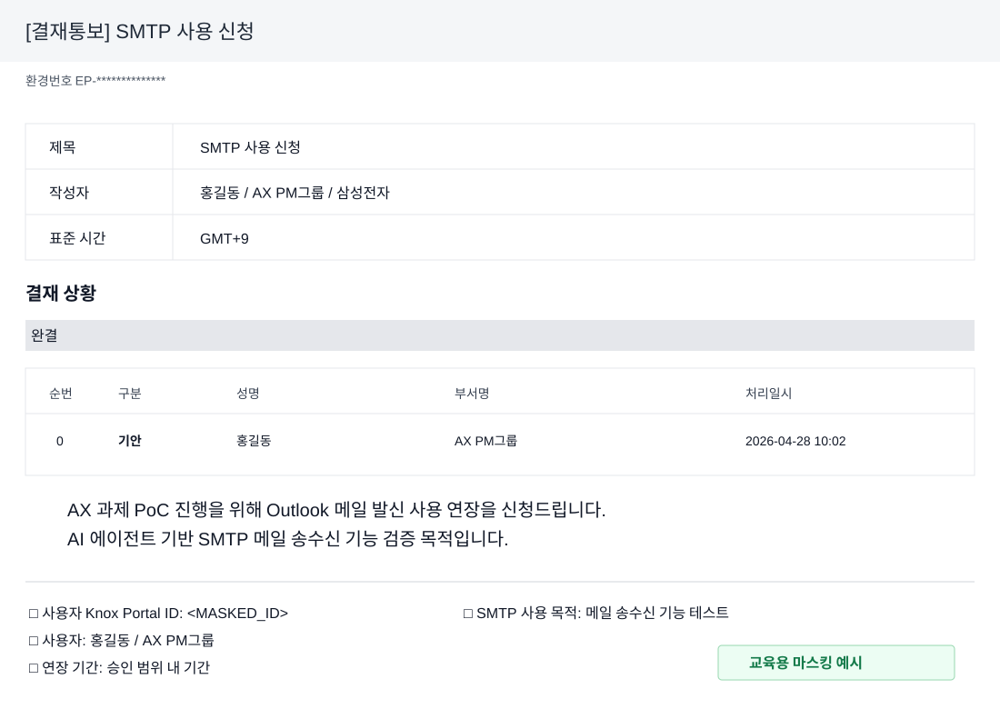

각 실습은 약 10분 내외로 진행하며, 전체 러닝타임은 약 130분입니다. 왼쪽에는 플레이북을 열고 오른쪽에는 Codex 앱을 실행한 뒤, 예시 프롬프트를 복사해 붙여 넣으며 따라갑니다.
0-1 · AI 혁명: 실무 가이드생성형 AI를 검색 도구가 아니라 업무 파트너로 이해하기 · 10분0-2 · 나에게 맞는 AI 파트너 찾기ChatGPT, Claude, Gemini, Codex의 역할과 강점 비교 · 10분1-1 · 처음 만나는 CodexChatGPT와 Codex의 차이를 지원팀 업무 예시로 이해 · 10분1-2 · Codex App, CLI, IDE 선택초보자는 어디에서 시작해야 하는지와 프로젝트 폴더 선택 · 10분1-3 · 첫 작업 시키기프로젝트 구조를 읽고, Codex 활용 Playbook을 Claude Code 버전으로 확장 · 10분1-4 · 프롬프트 기본기역할, 맥락, 제약조건, 완료 기준을 담는 구조 · 10분2-1 · 개인정보와 .env 설정외부 AI 입력 금지 정보, AD/Knox/URL 설정, .env 저장 위치 확인 · 10분2-2 · 이메일 수/발신 자동화POP3 수신 실습과 SMTP 발신 조건/DRY_RUN 분리 · 10분2-3 · 사내 시스템 UI 자동화Knox/GSCM 조회, PSI 다운로드, 동영상 기반 Agent 구성 · 10분3-1 · 파일 자동 정리파일 분류, 중복 후보 탐지, 폴더 구조화 실습 · 10분3-2 · 도구 vs 스킬현재 환경 확인, GSCM PSI 스킬화, zip 배포/설치/사용 · 10분3-3 · 데이터/엑셀 실무PSI 분석 계획, 대시보드 생성, 동일 양식 엑셀 병합 · 10분4-1 · 보안과 마무리.env, 권한, DRM, 프롬프트 모음으로 실습 정리 · 10분
2시간 교육 필수 실습 예제 10개
43개 프롬프트를 모두 진행하기에는 시간이 부족하므로, 실제 강의에서는 아래 10개 흐름을 우선 진행합니다. 설명형, 비교형, 보안형, 파일 작업형, 데이터 분석형, 마무리형이 섞여 있어 Codex의 핵심 감각을 2시간 안에 잡기 좋습니다.
순서
프롬프트
실습 내용
예상 시간
필수 1
#1
Codex와 ChatGPT 차이 설명
5분
필수 2
#5
이 폴더가 어떤 프로젝트인지 설명받기
10분
필수 3
#9 + #10
대충 요청과 구조화 요청의 답변 품질 비교
12분
필수 4
#12
Codex에게 좋은 프롬프트를 먼저 만들어 달라고 하기
8분
필수 5
#13
외부 AI 사용 전 개인정보와 비밀값 주의점 확인
8분
필수 6
#15
.env에 Knox 메일 설정을 안전하게 분리하는 방법 이해
10분
필수 7
#24
파일을 실제로 옮기기 전 분류 계획만 세우기
8분
필수 8
#28
현재 Codex 환경의 도구와 스킬 확인
8분
필수 9
#36
PSI 샘플 데이터 분석 계획 세우기
12분
필수 10
#43
내일부터 업무에서 쓸 개인 실행 계획 만들기
7분
필수 실습에 해당하는 프롬프트 복사 영역에는 필수 배지를 붙였습니다. 시간이 남으면 POP3/SMTP, GSCM, 동영상 Agent, 엑셀 병합 실습을 선택 실습으로 진행합니다.
01. 처음 만나는 Codex
쉽게 말해 Codex는 내가 선택한 작업 폴더 안에서 파일을 읽고, 필요한 변경을 제안하고, 명령을 실행하고, 결과까지 확인하는 AI 작업자입니다. ChatGPT가 대화로 방향을 잡아주는 도구라면, Codex는 내 작업 공간 안에서 실제 산출물까지 함께 만들어 가는 도구에 가깝습니다.
ChatGPT와 다른 점
ChatGPT는 대화와 지식 작업 중심입니다.
Codex는 폴더, 파일, 터미널, Git 변경사항을 함께 다룹니다.
Codex는 작업을 끝내기 위해 읽기, 수정, 실행, 검토 루프를 수행합니다.
운전에 비유하면 ChatGPT는 길을 알려주는 내비게이션, Codex는 목적지까지 실제로 움직이는 자율주행에 가깝습니다.
요리에 비유하면 ChatGPT는 레시피를 설명해주는 역할, Codex는 재료를 보고 조리하고 결과를 확인하는 요리사 역할에 가깝습니다.
사무 업무에 비유하면 ChatGPT는 옆에서 조언해주는 선배, Codex는 내 PC의 작업 폴더를 보며 같이 처리하는 실무 동료에 가깝습니다.
Codex, Claude Code, Gemini CLI 중 무엇을 쓰면 좋을까?
지원팀 입장에서는 Codex, Claude Code, Gemini CLI가 모두 "AI에게 작업을 맡기는 도구"처럼 비슷하게 보일 수 있습니다.
비개발자나 지원팀 구성원이 처음 쓰기에는 화면에서 폴더, 파일 변경, 실행 결과를 확인하기 쉬운 Codex 앱이 가장 무난합니다.
Claude Code는 코드 구조를 깊게 읽고 수정하는 흐름에 강해서 개발자가 선호하는 경우가 많습니다.
Gemini CLI는 터미널 명령과 로컬 자동화에 익숙한 사람에게 더 잘 맞습니다.
이 플레이북은 Codex 기준으로 만들었지만, 핵심 원리는 같습니다. 목표, 맥락, 제약, 완료 조건을 분명히 주고 결과를 검토하는 방식은 다른 도구에도 그대로 적용할 수 있습니다.
필수 실습 1
Codex를 처음 쓰는 사람에게 설명하듯이, ChatGPT와 Codex의 차이를 업무 예시 5개로 설명해줘. 개발자가 아닌 지원팀 구성원이 이해할 수 있는 말로 정리해줘.
예시 답변
ChatGPT와 Codex의 가장 큰 차이는 이거예요.
ChatGPT는 물어보면 답을 주는 상담 상대에 가깝고, Codex는 내 폴더와 파일을 보고 실제 작업까지 해주는 업무 실행자에 가깝습니다.
예시로 보면 더 쉽습니다.
문서 요약
ChatGPT는 메일이나 회의록 내용을 붙여넣으면 요약해줍니다. Codex는 특정 폴더 안의 여러 문서 파일을 찾아서 읽고, 요약본 파일까지 만들어줄 수 있습니다.
파일 정리
ChatGPT는 "파일을 어떻게 정리하면 좋을까?"라고 물으면 정리 기준을 제안합니다. Codex는 실제 폴더를 확인하고, 파일 종류별 분류 계획을 세운 뒤, 승인하면 폴더 생성이나 파일 이동까지 할 수 있습니다.
엑셀 업무
ChatGPT는 엑셀 수식이나 분석 방법을 설명해줍니다. Codex는 여러 엑셀 파일을 읽고, 하나로 합치는 스크립트를 만들거나 결과 파일을 생성하는 작업을 도와줄 수 있습니다.
반복 업무 자동화
ChatGPT는 "이 업무를 자동화하려면 어떻게 해야 해?"라고 물으면 절차를 설명합니다. Codex는 반복 업무 절차를 바탕으로 자동화 스크립트, 실행 파일, 작업 가이드 같은 산출물을 직접 만들 수 있습니다.
업무 자료 검토
ChatGPT는 붙여넣은 문장을 더 자연스럽게 고쳐줍니다. Codex는 프로젝트 안의 여러 파일을 비교하면서 빠진 내용, 중복 내용, 수정된 부분을 찾아 정리해줄 수 있습니다.
한 줄로 말하면: ChatGPT는 "질문에 답하는 AI"이고, Codex는 "내 작업 공간에서 파일을 읽고 고치고 검증하는 AI 작업자"입니다.
실습 예시: Codex와 ChatGPT 사용 상황 구분하기
ChatGPT와 Codex를 둘 다 사용할 수 있는 환경이라고 가정하고, 언제 ChatGPT를 쓰고 언제 Codex를 쓰면 좋은지 알려줘.
특히 Codex 토큰이 제한되어 있다는 관점에서, 꼭 Codex를 사용해야 하는 경우에만 쓰도록 기준을 잡아줘.
지원팀 구성원이 이해할 수 있게 다음 형식으로 정리해줘.
1. ChatGPT가 더 적합한 상황
2. Codex가 더 적합한 상황
3. 둘 중 무엇을 쓸지 고르는 판단 기준
4. 무조건 Codex를 쓰면 안 되는 경우
5. Codex 토큰을 아끼는 사용 원칙
6. 한 줄 결론
예시 답변
둘 다 사용할 수 있다면 무조건 Codex만 쓰는 것이 정답은 아닙니다. 대화로 생각을 정리하거나 빠르게 설명을 듣고 싶을 때는 ChatGPT, 내 폴더와 파일을 실제로 읽고 결과물을 만들어야 할 때는 Codex가 더 잘 맞습니다.
토큰 절약 관점
Codex는 프로젝트 파일, 이전 대화, 명령 실행 결과, 변경 diff까지 함께 다루기 때문에 단순 질문보다 토큰을 더 많이 쓸 수 있습니다. 그래서 Codex는 “질문용”보다 “작업 실행용”으로 아껴 쓰는 편이 좋습니다.
ChatGPT가 더 적합한 상황
업무 메일 문장 다듬기, 회의 내용 요약, 개념 설명, 아이디어 정리, 보고서 목차 잡기처럼 파일을 직접 열거나 수정하지 않아도 되는 작업에 좋습니다. 즉 생각 정리, 문장 작성, 개념 설명은 먼저 ChatGPT로 처리합니다.
Codex가 더 적합한 상황
특정 폴더의 파일 구조를 분석하거나, 여러 엑셀 파일을 병합하거나, HTML 문서를 고치거나, 실행 결과를 확인해야 하는 작업에 좋습니다. 즉 내 프로젝트 폴더의 파일을 읽고, 수정하고, 실행하고, 검증해야 할 때 Codex를 씁니다.
둘 중 무엇을 쓸지 고르는 판단 기준
아래 질문 중 하나라도 “예”라면 Codex가 적합합니다. 전부 “아니오”라면 ChatGPT로 먼저 처리합니다.
이 질문에 답하려면 내 PC의 파일을 읽어야 하나?
파일을 만들거나 고쳐야 하나?
명령을 실행하거나 결과를 검증해야 하나?
무조건 Codex를 쓰면 안 되는 경우
민감정보, 비밀번호, OTP, 고객정보, DRM 문서 원문처럼 접근 권한과 보안 검토가 필요한 내용은 Codex에 바로 맡기면 안 됩니다. 또한 단순 질문, 문장 다듬기, 개념 설명, 아이디어 정리처럼 파일 작업이 필요 없는 일은 ChatGPT가 더 간단하고 토큰도 아낄 수 있습니다.
Codex 토큰을 아끼는 사용 원칙
Codex는 꼭 필요한 순간에 사용합니다. 처음부터 폴더 전체를 읽히기보다, 수정할 파일과 섹션을 좁게 지정하고, “먼저 계획만 세워줘”처럼 단계적으로 요청하면 토큰 낭비를 줄일 수 있습니다.
한 줄 결론
ChatGPT는 생각과 문장을 정리할 때, Codex는 실제 프로젝트 파일을 읽고 고치고 검증해야 할 때 아껴서 사용합니다.
참고 자료: 사내 외부 AI 가이드 기준
docs/External_AI_Guide_KOR_2606121500.pdf의 AI 서비스 정책 설명에서는 ChatGPT Enterprise와 Codex의 사용량 산정 방식이 다르게 안내됩니다.
ChatGPT Enterprise는 기능별 크레딧 기준으로 관리되며, 일반 GPT 5.5 Instant 메시지는 무제한으로 안내되어 있습니다.
Codex는 모델 입력 토큰, 캐시된 입력 토큰, 출력 토큰 기준으로 크레딧이 산정됩니다.
그래서 단순 질문, 문장 정리, 아이디어 정리, 개념 설명은 먼저 ChatGPT로 처리하는 편이 효율적입니다.
Codex는 프로젝트 폴더의 파일을 읽고, 수정하고, 실행하고, 검증해야 하는 작업 실행 상황에서 사용하는 것을 권장합니다.
정리하면, ChatGPT는 넓게 쓰고 Codex는 꼭 필요한 작업 실행 순간에 아껴 쓰는 것이 실습 기준입니다.
02. Codex App, CLI, IDE 중 무엇부터?
처음 사용하는 사람은 Codex 앱부터 시작하는 것이 가장 쉽습니다. Codex 앱은 카카오톡이나 메신저처럼 화면에서 대화하면서, 내가 고른 폴더의 파일을 같이 보고 작업을 맡길 수 있는 프로그램입니다. CLI는 검은 명령어 창에서 쓰는 방식이고, IDE extension은 VS Code 같은 개발 도구 안에서 쓰는 방식입니다.
사용 방식
먼저 쓰면 좋은 사람
쉽게 말하면
Codex 앱
처음 사용하는 사람, 지원팀 구성원
화면에서 폴더를 고르고, 대화하면서 결과를 눈으로 확인하는 방식
Codex CLI
명령어 창 사용이 익숙한 사람
키보드로 명령을 입력해서 빠르게 일을 시키는 방식
Codex IDE extension
VS Code, Cursor 같은 개발 도구를 쓰는 사람
코드나 문서를 열어둔 상태에서 바로 수정 도움을 받는 방식
Codex App, CLI, IDE 중 무엇부터 써야 할지 처음 사용하는 사람에게 쉽게 설명해줘.
지원팀 구성원이 이해할 수 있게 다음 형식으로 정리해줘.
1. 세 가지의 차이
2. 처음 시작하는 사람에게 추천하는 순서
3. 업무 예시별 추천 도구
4. 설치보다 먼저 확인해야 할 것
5. 한 줄 결론
예시 답변
처음 사용하는 사람이라면 Codex App부터 시작하는 것이 가장 좋습니다. 화면에서 폴더를 고르고, 대화창에 요청을 입력하고, Codex가 어떤 파일을 봤는지와 어떤 결과를 만들었는지 눈으로 확인할 수 있기 때문입니다.
세 가지의 차이
Codex App은 일반 프로그램처럼 화면을 보면서 쓰는 방식입니다. CLI는 명령어 창에서 글자로 지시하는 방식이고, IDE는 VS Code나 Cursor 같은 개발 도구 안에서 파일을 열어둔 채 쓰는 방식입니다.
처음 시작하는 사람에게 추천하는 순서
지원팀처럼 개발 도구가 익숙하지 않은 사용자는 Codex App으로 시작하는 것이 좋습니다. 이후 반복 작업을 빠르게 실행하고 싶으면 CLI를 배우고, 코드나 문서 파일을 자주 고친다면 IDE extension을 함께 쓰면 됩니다.
업무 예시별 추천 도구
문서 요약, 파일 정리, 교육 자료 수정처럼 화면으로 확인하면서 진행할 일은 Codex App이 좋습니다. 매일 같은 작업을 반복 실행하려면 CLI가 좋고, HTML, 스크립트, 설정 파일을 계속 고치는 작업은 IDE가 편합니다.
설치보다 먼저 확인해야 할 것
어떤 폴더를 열어야 하는지, Codex가 읽어도 되는 파일인지, 결과 파일을 어디에 만들지 먼저 정해야 합니다. 비밀번호, OTP, 고객정보 같은 민감정보는 입력하지 않습니다.
한 줄 결론
처음에는 Codex App으로 시작하고, 익숙해진 뒤 반복 실행은 CLI, 개발 도구 안의 파일 편집은 IDE로 넓혀가면 됩니다.
실습 예시: 처음 실행한 Codex 앱 화면 이해하기
지원팀 사람이 처음으로 Codex 앱을 설치하고 실행했다고 가정하고, Codex 앱 화면 구성을 쉽게 설명해줘.
개발자가 아닌 사람이 이해할 수 있게 다음 내용을 포함해줘.
1. 왼쪽 메뉴에서 프로젝트, 채팅, 자동화, 플러그인이 무엇인지
2. 오른쪽 상단 버튼들은 대략 무엇을 하는 곳인지
3. 채팅창 하단의 전체 액세스, 모델명, 중간 같은 옵션이 무엇인지
4. 처음 실행했을 때 추천 세팅 순서
5. 조심해야 할 보안 주의사항
초등학생도 이해할 수 있는 쉬운 표현으로 정리해줘.
예시 답변
Codex 앱은 내 PC의 특정 폴더를 열어두고, 그 안에서 AI에게 일을 맡기는 작업창이라고 보면 됩니다. 처음에는 모든 메뉴를 다 알 필요 없고, 프로젝트 선택 → 채팅 시작 → 프롬프트 입력 → 결과 확인 흐름만 알면 충분합니다.
왼쪽 메뉴
프로젝트는 Codex가 작업할 폴더입니다. 예를 들어 v1.5 폴더를 프로젝트로 열면, Codex는 그 폴더 안의 파일을 읽고 설명하거나 수정할 수 있습니다. 쉽게 말하면 Codex에게 보여줄 작업 책상입니다.
채팅은 프로젝트 안에서 Codex와 주고받는 대화입니다. 하나의 업무 단위라고 보면 됩니다. 예를 들어 "이 폴더 뭐 하는 프로젝트야?", "README를 쉽게 고쳐줘", "엑셀 파일을 분석해줘" 같은 요청을 넣습니다.
자동화는 반복되는 일을 Codex에게 예약해두는 기능입니다. 예를 들어 매주 월요일 아침에 특정 폴더를 점검하게 하거나, 정기적으로 오류를 확인하게 할 수 있습니다. 처음 교육에서는 "반복 업무를 나중에 예약할 수 있는 기능" 정도로 이해하면 됩니다.
플러그인은 Codex가 할 수 있는 일을 늘려주는 추가 도구입니다. GitHub, Gmail, Google Drive, Slack 같은 외부 서비스와 연결하거나, 특정 업무용 스킬을 추가할 때 사용합니다. 스마트폰에 앱을 설치해서 기능을 늘리는 것과 비슷합니다.
오른쪽 상단 버튼
오른쪽 상단은 Codex가 작업한 결과를 확인하거나 추가 도구를 여는 자리입니다. 터미널은 명령어 실행 결과를 보는 창이고, 변경사항이나 리뷰 버튼은 Codex가 파일을 바꿨을 때 어디가 바뀌었는지 확인하는 곳입니다. 브라우저나 미리보기 버튼은 HTML 페이지나 웹 화면을 확인할 때 사용합니다.
채팅창 하단 옵션
전체 액세스는 Codex가 파일이나 명령어를 얼마나 자유롭게 다룰 수 있는지 정하는 권한입니다. 처음에는 너무 넓게 주기보다 필요한 작업만 허용하는 것이 안전합니다.
5.5 같은 숫자는 사용할 AI 모델입니다. 보통 기본값 그대로 두면 됩니다. 중간은 Codex가 얼마나 깊게 생각할지 정하는 옵션입니다. 간단한 설명은 낮게, 복잡한 분석이나 수정은 중간 이상으로 보면 됩니다. 처음 교육에서는 기본값 그대로 두면 충분합니다.
처음 실행했을 때 추천 세팅 순서
Codex 앱을 실행한 뒤, 프로젝트에서 실습 폴더인 v1.5를 선택합니다. 새 채팅을 시작하고, 하단 옵션은 일단 기본값으로 둡니다. 그 다음 플레이북의 프롬프트를 복사해서 붙여 넣고, Codex가 어떤 파일을 읽었는지와 어떤 결과를 냈는지 확인합니다.
추천 설정: 작업 모드는 코딩용
처음 실행했다면 설정 → 일반 → 작업 모드에서 코딩용으로 바꾸는 것을 추천합니다. 이 플레이북은 파일을 읽고, 수정하고, 실행 결과를 확인하는 실습이 많아서 기술적인 설명과 제어가 더 잘 보이는 편이 좋습니다.
코딩용: 더 기술적인 응답과 제어를 보여줍니다.
일상 작업용: 성능은 같지만 기술적인 세부 사항은 더 적게 보여줍니다.
초보자라도 교육 중에는 코딩용으로 두면 Codex가 어떤 파일을 읽었고 어떤 작업을 했는지 따라가기 쉽습니다.
조심해야 할 점
비밀번호, OTP, 고객정보, DRM 문서 원문 같은 민감정보는 프롬프트에 넣지 않습니다. 파일 수정이나 삭제가 필요한 작업은 바로 실행하지 말고, 먼저 계획을 확인한 뒤 진행합니다.
한 줄로 말하면: 왼쪽은 작업 공간과 메뉴, 가운데는 Codex와 대화하는 곳, 오른쪽 상단은 결과와 도구를 확인하는 곳입니다.
03. 첫 작업: 이 폴더 뭐 하는 프로젝트야?
Codex 앱에서 프로젝트 폴더를 선택한 뒤, 먼저 읽기만 시키는 질문으로 시작합니다. 처음부터 파일을 바꾸게 하지 말고, 프로젝트 구조와 실행 방법을 설명하게 하면 안전합니다.
Codex 앱을 열고 프로젝트 폴더를 선택합니다.
실행 위치가 맞는지 확인합니다.
아래 프롬프트를 복사해 붙여 넣습니다.
Codex가 읽은 파일과 모르는 부분을 구분해서 말하는지 확인합니다.
필수 실습 2
이 폴더가 어떤 프로젝트인지 초보자도 이해할 수 있게 설명해줘.
다음 형식으로 정리해줘.
1. 프로젝트 목적
2. 주요 폴더와 파일 역할
3. 실행하거나 열어보는 방법
4. 지금 바로 수정해도 되는 파일과 조심해야 할 파일
5. 아직 확인이 필요한 부분
예시 답변
프로젝트 목적
이 프로젝트는 지원팀 구성원이 Codex를 처음 사용할 때 따라 할 수 있는 HTML 기반 실습 플레이북입니다. 교육 참석자는 왼쪽에 플레이북을 열고, 오른쪽에 Codex 앱을 실행한 뒤 예시 프롬프트를 복사해서 실습합니다.
주요 폴더와 파일 역할
루트 폴더에는 버전별 플레이북인 v1.4, v1.4.5, v1.5가 있습니다. 현재 교육 기준은 v1.5입니다. index.html은 실제 브라우저에서 여는 메인 플레이북이고, assets/css/style.css는 화면 디자인, assets/js/app.js는 복사 버튼과 목차 하이라이트 동작을 담당합니다. docs에는 참고 문서가 있고, examples에는 실습용 샘플 파일과 ZIP이 들어 있습니다.
실행하거나 열어보는 방법
별도 설치나 빌드 없이 v1.5/index.html 파일을 브라우저로 열면 됩니다. 교육에서는 이 파일을 왼쪽 화면에 열어두고, 오른쪽 화면에는 Codex 앱을 열어 예시 프롬프트를 복사해 붙여 넣는 방식으로 진행합니다.
지금 바로 수정해도 되는 파일과 조심해야 할 파일
교육 내용과 화면 문구를 바꾸려면 v1.5/index.html을 수정하면 됩니다. 디자인은 v1.5/assets/css/style.css, 복사 버튼 동작은 v1.5/assets/js/app.js에서 수정합니다. v1.4와 v1.4.5는 이전 버전 백업 성격이 있으므로, 현재 교육본을 바꿀 때는 건드리지 않는 것이 좋습니다.
아직 확인이 필요한 부분
교육 당일 배포 방식, 사내 보안 정책에 맞춘 예시 문구, 실제 참석자 PC에서 브라우저 복사 버튼이 잘 동작하는지 확인이 필요합니다. 또한 사내 시스템 자동화 예시는 실제 계정이나 내부 URL 없이 비식별화된 시나리오로만 진행해야 합니다.
실습 예시: Codex 활용 Playbook을 Claude Code Playbook으로 바꾸기
앞 실습에서 Codex가 이 폴더의 목적과 구조를 읽는 모습을 확인했다면, 이번에는 그 이해를 바탕으로 새 버전의 교육 자료를 만들어봅니다. 이 실습은 Codex가 단순히 설명만 하는 도구가 아니라, 기존 자료를 분석하고 원본을 보호하면서 새 산출물을 만들 수 있다는 점을 보여줍니다.
실습 포인트
처음부터 파일을 만들게 하지 말고, 먼저 계획을 세우게 합니다. 계획이 괜찮으면 원본 폴더는 그대로 두고 examples/claude-code-v1.0 같은 새 폴더에 결과물을 생성하게 합니다.
이 프로젝트는 Codex 활용 Playbook이야.
이걸 Claude Code Playbook 버전으로도 만들고 싶어.
아직 파일을 수정하지 말고, 먼저 다음 형식으로 계획만 세워줘.
1. 그대로 재사용해도 되는 파일
2. Claude Code 기준으로 바꿔야 하는 내용
3. 새로 만들 폴더와 파일 구조
4. 첫 번째로 수정하면 좋은 파일
5. 원본을 보호하기 위한 주의사항
6. 사람이 확인해야 할 부분
예시 답변: 계획
그대로 재사용해도 되는 파일
assets/css/style.css와 assets/js/app.js는 화면 디자인, 목차 접기, 복사 버튼 기능을 담당하므로 거의 그대로 재사용할 수 있습니다. examples/psi-dashboard, examples/excel-merge 같은 샘플 데이터도 Claude Code 실습에서 파일 분석과 결과 생성 예제로 다시 쓸 수 있습니다.
Claude Code 기준으로 바꿔야 하는 내용
제목, README, 교육 진행표, 강사용 메모, 공식 문서 출처, 보안 설명은 Claude Code 기준으로 바꿔야 합니다. 특히 Codex 앱에서 프로젝트를 선택하는 설명은 Claude Code를 터미널이나 VS Code에서 실행하는 흐름으로 바꾸는 것이 좋습니다.
새로 만들 폴더와 파일 구조
원본 v1.5는 그대로 두고 examples/claude-code-v1.0 폴더를 새로 만드는 방식이 안전합니다. 그 안에는 README.md, index.html, assets, docs, prompts, 샘플 예제 폴더를 복사해서 Claude Code 버전으로 수정합니다.
첫 번째로 수정하면 좋은 파일
README.md부터 수정하는 것이 좋습니다. 프로젝트 목적, 사용 방법, 보안 원칙을 먼저 Claude Code 기준으로 정리하면, 이후 index.html과 교육 문서의 톤을 맞추기 쉽습니다.
원본을 보호하기 위한 주의사항
기존 v1.5 폴더는 직접 수정하지 않습니다. 새 폴더를 만든 뒤 복사본에서만 작업하고, 예제 원본 파일인 ZIP이나 XLSX는 덮어쓰지 않습니다. 실제 비밀번호, OTP, API key, 고객정보, 내부 URL은 새 플레이북에도 넣지 않습니다.
사람이 확인해야 할 부분
Claude Code의 최신 설치 방법, 권한 승인 방식, MCP와 Skills 설명, 사내 보안 정책과 충돌하는 부분은 사람이 다시 확인해야 합니다. 공식 문서 링크도 추측으로 넣지 말고 Anthropic 공식 문서를 기준으로 확인해야 합니다.
좋아.
현재 열려 있는 프로젝트 폴더를 기준으로 examples/claude-code-v1.0 폴더를 생성하고,
여기에 Claude Code Playbook 버전을 생성 저장해줘.
조건:
- 원본 v1.5 폴더의 기존 파일은 수정하지 마.
- 절대 경로(E:\, D:\ 같은 드라이브 경로)를 사용하지 말고 현재 프로젝트 기준 상대 경로로 작업해.
- 기존 HTML 플레이북 구조와 디자인은 최대한 재사용해.
- README.md, docs 폴더, prompts 폴더를 Claude Code 기준으로 바꿔줘.
- index.html에는 Claude Code 버전 제목, 목차, 핵심 안내, 공식 문서 링크를 반영해줘.
- 완료 후 변경된 파일 목록과 사람이 확인해야 할 부분을 알려줘.
예시 답변: 생성 완료 후 보고
Claude Code Playbook 버전을 생성했습니다. 원본 v1.5 폴더는 그대로 두고, 새 결과물은 examples/claude-code-v1.0 폴더에 저장했습니다.
검증 결과 JavaScript 문법 확인은 통과했고, HTML 안의 로컬 이미지와 다운로드 링크 대상도 존재합니다. 다만 실제 브라우저 화면은 교육 PC에서 한 번 열어 확인하는 것이 좋습니다.
사람이 추가로 확인해야 할 부분은 Claude Code 설치/로그인 방식, Windows 터미널 기준 안내, 회사 정책상 MCP와 외부 접속 허용 범위, 공식 문서 링크의 최신성입니다.
04. 프롬프트 기본기
공식 Best practices는 좋은 기본 프롬프트에 목표, 맥락, 제약, 완료 조건을 넣으라고 권합니다. 교육에서는 이 네 가지를 “일 맡기는 문장”의 기본 골격으로 사용합니다.
목표맥락제약완료 조건
실습 예시: 공식 문서로 프롬프트 작성법 확인하기
프롬프트 기본기는 감으로만 설명하지 않고 참고 문서를 함께 확인하면 좋습니다. Codex에게 공식 문서를 기준으로 설명하게 하면, 교육 자료의 표현도 더 안전하게 다듬을 수 있습니다.
혹시 Codex 공식 문서에 프롬프트를 어떻게 작성해야 하는지 가이드가 있는지 확인해줘.
다음 형식으로 정리해줘.
1. 공식 문서에 프롬프트 작성 가이드가 있는지
2. 좋은 프롬프트에 넣으면 좋은 요소
3. 복잡한 작업을 시킬 때 권장되는 방식
4. 반복해서 쓰는 프롬프트를 관리하는 방법
5. 참고한 공식 문서 링크
예시 답변
공식 문서에 프롬프트 작성 가이드가 있는지
네. Codex 공식 문서에는 Prompting과 Best practices 문서가 있고, Codex에 작업을 맡길 때 어떤 정보를 프롬프트에 넣으면 좋은지 설명합니다.
좋은 프롬프트에 넣으면 좋은 요소
공식 Best practices 기준으로 좋은 기본 프롬프트에는 Goal, Context, Constraints, Done when을 넣는 것이 좋습니다. 교육용으로는 각각 목표, 맥락, 제약, 완료 조건이라고 설명하면 이해하기 쉽습니다.
복잡한 작업을 시킬 때 권장되는 방식
복잡하거나 애매한 작업은 바로 구현시키지 말고 먼저 계획을 요청하는 것이 좋습니다. Codex 문서에서는 어려운 작업에 대해 Plan mode를 쓰거나, Codex에게 먼저 질문하게 해서 흐릿한 요구사항을 구체화하는 방식을 권장합니다.
반복해서 쓰는 프롬프트를 관리하는 방법
한 번 쓰는 요청은 프롬프트에 적으면 됩니다. 저장소 전체에서 계속 지켜야 하는 규칙은 AGENTS.md에 두고, 반복되는 업무 절차는 Skills로 만드는 것이 좋습니다. Custom Prompts는 공식 문서상 deprecated로 안내되므로, 새로 정리할 때는 Skills를 우선 고려합니다.
같은 주제라도 프롬프트가 흐리면 답변도 넓고 애매해집니다. 반대로 목표, 맥락, 제약, 완료 조건을 넣으면 Codex가 작업 범위와 검토 기준을 더 분명하게 잡습니다.
대충 쓴 프롬프트
필수 실습 3-A
경비 정산 매뉴얼 PDF로 RAG 챗봇 만들 수 있어?
어떻게 하면 되는지 알려줘.
구조화한 프롬프트
필수 실습 3-B
목표:
지원팀 경비 정산 매뉴얼 PDF를 기반으로 질문에 답하는 RAG 챗봇 실습을 만들고 싶어.
맥락:
- 교육 대상은 개발자가 아닌 지원팀 구성원이야.
- 예시는 실제 사내 문서가 아니라 마스킹된 샘플 PDF로 진행할 거야.
- Codex가 특정 도메인 지식을 모를 수 있으니, PDF 근거를 검색해서 답하는 구조를 보여주고 싶어.
제약:
- 아직 파일을 만들지 말고 먼저 계획만 세워줘.
- 실제 비밀번호, 고객정보, 내부 URL, DRM 문서 원문은 사용하지 않는다고 가정해줘.
- OpenAI File Search 방식과 로컬 벡터DB 방식의 차이를 초보자도 이해할 수 있게 비교해줘.
- 실습은 20분 안에 설명 가능한 최소 기능 기준으로 잡아줘.
완료 조건:
1. RAG가 무엇인지 한 문단으로 설명
2. 추천 폴더 구조
3. PDF를 벡터DB로 만드는 단계
4. 질문하면 PDF 근거로 답하는 단계
5. 보안상 주의할 점
6. 첫 번째 실습 프롬프트 예시
답변 차이 예시
대충 요청했을 때
구조화해서 요청했을 때
RAG는 문서를 검색해서 답변하는 방식이고, PDF를 임베딩해서 벡터DB에 저장한 다음 질문과 비슷한 내용을 찾아 답하면 됩니다. Python, LangChain, Chroma 같은 도구를 쓰면 만들 수 있습니다.
이번 실습의 목표는 경비 정산 매뉴얼 PDF를 근거로 답하는 최소 RAG 챗봇을 만드는 것입니다. 교육용 샘플 PDF만 사용하고, 실제 사내 문서와 개인정보는 제외합니다.
PDF를 읽고 텍스트를 나눈 뒤 벡터화하면 됩니다. 이후 사용자가 질문하면 관련 문단을 찾아 모델에 넣어 답변하게 하면 됩니다.
rag-expense-manual/docs에는 샘플 PDF, app/ingest.py에는 PDF 읽기와 색인 생성, app/chat.py에는 질문 응답 로직, .env.example에는 API 키 이름만 넣는 구조를 추천합니다.
보안에 주의하고 API 키는 노출하지 않으면 됩니다.
실제 경비 정산 매뉴얼은 외부 API 전송 가능 여부를 먼저 확인해야 합니다. 교육에서는 마스킹 PDF를 쓰고, DRM 문서 원문, 내부 URL, 개인 계좌정보, 사번은 프롬프트와 Git에 넣지 않습니다.
필요하면 간단한 웹 UI도 만들 수 있습니다.
20분 실습에서는 웹 UI보다 CLI 질문 응답을 먼저 만듭니다. 완료 기준은 “질문 3개에 대해 PDF 문단 근거와 함께 답변하고, 모르는 내용은 모른다고 말하는 것”으로 둡니다.
차이는 명확합니다. 대충 쓴 프롬프트는 일반론을 돌려받기 쉽고, 구조화한 프롬프트는 실습 범위, 파일 구조, 보안 기준, 완료 기준까지 바로 검토 가능한 답변을 얻기 쉽습니다.
실습 예시: 토큰을 아끼는 프롬프트 작성법
프롬프트 자체도 토큰을 쓰지만, 더 큰 차이는 프롬프트가 Codex에게 얼마나 많은 파일을 읽고, 얼마나 넓게 추론하고, 얼마나 길게 답하게 만드는지에서 생깁니다. Codex에 일을 맡길 때는 범위를 좁혀서 지시하는 것이 토큰 절약의 핵심입니다.
Codex 토큰을 아껴 쓰고 싶어.
프롬프트를 어떻게 작성하면 불필요한 파일 읽기, 긴 답변, 넓은 작업 범위를 줄일 수 있는지 알려줘.
지원팀 구성원이 바로 따라 할 수 있게 다음 형식으로 정리해줘.
1. 토큰을 많이 쓰게 만드는 프롬프트 특징
2. 토큰을 아끼는 프롬프트 작성 원칙
3. 나쁜 예와 좋은 예 비교
4. Codex에게 먼저 계획만 요청하는 방법
5. 한 줄 결론
예시 답변
토큰을 많이 쓰게 만드는 프롬프트 특징
이 프로젝트 전체를 분석해줘, 알아서 개선해줘, 전체를 확인하고 고쳐줘처럼 범위가 넓은 요청은 Codex가 많은 파일을 읽고 긴 계획을 세우게 만들 수 있습니다. 파일, 섹션, 출력 형식이 정해져 있지 않으면 토큰 사용량이 커집니다.
토큰을 아끼는 프롬프트 작성 원칙
수정할 파일이나 섹션을 직접 지정합니다.
먼저 계획만 요청하고, 바로 전체 수정을 시키지 않습니다.
출력 형식을 짧게 제한합니다.
읽거나 수정하지 말아야 할 파일을 함께 적습니다.
검증 범위도 필요한 것만 지정합니다.
나쁜 예와 좋은 예 비교
나쁜 예:
이 프로젝트 전체를 보고 개선해줘.
좋은 예:
v1.5/index.html의 04. 프롬프트 기본기 섹션만 읽고,
예시 답변 뒤에 토큰 절약 팁 callout 1개를 추가해줘.
다른 파일은 읽거나 수정하지 말고,
변경 요약과 확인 방법만 알려줘.
Codex에게 먼저 계획만 요청하는 방법
작업이 조금이라도 크면 바로 수정시키기보다 아래처럼 시작합니다.
아직 파일을 수정하지 말고,
어떤 파일을 읽고 어떤 부분을 바꿀지 계획만 세워줘.
가능하면 5줄 이내로 정리해줘.
한 줄 결론
토큰을 아끼려면 Codex에게 무엇을, 어디까지, 어떤 형식으로 할지 좁게 알려줘야 합니다.
실습 예시: 막히면 Codex에게 프롬프트부터 만들어 달라고 하기
처음부터 좋은 프롬프트를 완벽하게 쓰려고 하면 오히려 막힐 수 있습니다. 그럴 때는 작업을 바로 시키지 말고, 먼저 Codex에게 “이 일을 잘 시키기 위한 프롬프트”를 만들어 달라고 요청합니다.
필수 실습 4
내가 하고 싶은 일은 아래와 같아.
[하고 싶은 일]
지원팀 경비 정산 매뉴얼 PDF를 기반으로 질문하면 답해주는 RAG 챗봇을 만들고 싶어.
아직 작업을 시작하지 말고,
Codex에게 이 일을 잘 시키기 위한 프롬프트를 먼저 만들어줘.
프롬프트에는 다음이 포함되게 해줘.
1. 목표
2. 맥락
3. 제약
4. 완료 조건
5. 먼저 확인해야 할 질문
예시 답변
아래처럼 다시 사용할 수 있는 프롬프트로 정리하면 좋습니다. 이 프롬프트를 복사해서 새 요청으로 넣으면 Codex가 바로 구현으로 뛰어들기보다 계획과 확인사항부터 잡을 가능성이 높아집니다.
목표:
지원팀 경비 정산 매뉴얼 PDF를 기반으로 질문에 답하는 RAG 챗봇 실습 프로젝트를 설계해줘.
맥락:
- 교육 대상은 개발자가 아닌 지원팀 구성원이야.
- 실제 사내 문서 대신 마스킹된 샘플 PDF를 사용할 거야.
- Codex가 도메인 지식을 추측하지 않고 PDF 근거를 찾아 답하는 구조를 보여주고 싶어.
제약:
- 아직 파일을 만들지 말고 먼저 계획만 세워줘.
- 실제 비밀번호, 고객정보, 내부 URL, DRM 문서 원문은 사용하지 마.
- OpenAI File Search 방식과 로컬 벡터DB 방식의 차이를 초보자도 이해할 수 있게 비교해줘.
완료 조건:
- 추천 폴더 구조를 제안해줘.
- PDF를 벡터DB로 만드는 단계를 설명해줘.
- 질문에 답할 때 근거 문단을 함께 보여주는 방식을 설명해줘.
- 보안상 주의할 점을 정리해줘.
먼저 확인해야 할 질문:
1. 실습은 OpenAI File Search 방식으로 할까, 로컬 벡터DB 방식으로 할까?
2. 샘플 PDF는 이미 준비되어 있나?
3. 결과물은 CLI 챗봇이면 충분한가, 웹 화면도 필요한가?
4. 실제 문서를 외부 API로 보내도 되는지 보안 검토가 끝났나?
이 방식의 장점은 초보자가 좋은 프롬프트를 처음부터 외우지 않아도 된다는 점입니다. Codex를 작업자뿐 아니라 프롬프트 코치로 쓰면, 요구사항을 더 안전하고 구체적인 작업 지시문으로 바꿀 수 있습니다.
05. 개인정보 환경변수 설정: .env 활용
.env는 개인별로 달라지거나 외부에 노출되면 안 되는 값을 코드와 분리해 내 PC에만 두는 설정 파일입니다. 이 섹션에서는 다음 이메일 수/발신 자동화 실습에서 사용할 Knox 메일 SMTP/POP3 설정값을 안전하게 분리하는 흐름을 먼저 준비합니다.
실습 예시: 외부 AI 사용 전 가장 먼저 확인할 것
외부 AI를 업무에 쓰기 시작하면 가장 먼저 확인해야 할 것은 개인정보와 비밀값입니다. 편리함보다 정보 보호가 먼저라는 감각을 잡아야 뒤의 .env 실습도 자연스럽게 이해됩니다.
필수 실습 5
회사에서 외부 AI를 사용하게 됐어.
외부 AI를 사용할 때 가장 먼저 주의해야 할 것이 무엇인지
개발자가 아닌 지원팀 구성원도 이해할 수 있게 설명해줘.
다음 형식으로 정리해줘.
1. 가장 먼저 주의해야 할 것
2. AI에 절대 입력하면 안 되는 정보
3. 입력해도 되는 정보로 바꾸는 방법
4. 업무 자동화 전에 확인해야 할 것
5. 한 줄 결론
예시 답변
가장 먼저 주의해야 할 것
외부 AI를 사용할 때 가장 먼저 주의해야 할 것은 개인정보와 비밀값을 입력하지 않는 것입니다.
AI가 편리하더라도, 입력한 내용이 외부 시스템으로 전달될 수 있다는 점을 항상 생각해야 합니다. 특히 비밀번호나 고객정보처럼 한 번 노출되면 되돌리기 어려운 정보는 절대 넣으면 안 됩니다.
AI에 절대 입력하면 안 되는 정보
비밀번호, OTP, 인증코드
API key, access token, refresh token
금융 비밀번호, 계좌 비밀번호, 카드 정보
주민번호, 여권번호, 사번 등 개인 식별정보
실제 고객명, 거래처명, 담당자 연락처
계약서 원문, 견적서 원문, 내부 보고서 원문
내부 시스템 URL, 서버 주소, 보안 정책 문서
DRM 문서 원문이나 접근 권한이 제한된 자료
입력해도 되는 정보로 바꾸는 방법
실제 값을 그대로 넣지 말고 마스킹하거나 샘플 데이터로 바꿔서 입력합니다.
홍길동 고객 → 고객 A
삼성상사 → 거래처 B
real.user@company.com → user@example.com
내 실제 다운로드 폴더 → 샘플 다운로드 폴더
실제 금액 123,456,789원 → 샘플 금액 100,000원
업무 흐름을 설명할 때도 실제 문서 내용을 붙여넣기보다, 필요한 구조만 예시로 바꾸는 것이 안전합니다.
업무 자동화 전에 확인해야 할 것
이 자료를 외부 AI에 입력해도 되는지
고객정보나 개인정보가 포함되어 있지 않은지
비밀번호, 토큰, API key가 포함되어 있지 않은지
회사 보안 정책이나 DRM 정책을 위반하지 않는지
자동화가 메일 발송, 파일 삭제, 시스템 입력처럼 실제 영향을 주는 작업인지
실행 전에 사람이 검토하고 승인할 단계가 있는지
한 줄 결론
외부 AI를 사용할 때는 편리함보다 정보 보호가 먼저이며, 실제 개인정보와 비밀값은 절대 입력하지 말고 마스킹된 샘플로 바꿔서 사용해야 합니다.
.env가 왜 필요한지
계정, 서버 주소, 작업 폴더처럼 사람마다 다른 값을 코드와 분리합니다.
비밀번호, OTP, 토큰 같은 민감정보가 Git이나 교육 자료에 들어가는 일을 막습니다.
다음 실습의 이메일 수/발신 자동화에서 같은 설정값을 재사용합니다.
.env 파일 샘플
아래 예시는 실제 값을 Git이나 교육 자료에 넣지 않고, 내 PC의 .env에만 저장해야 하는 항목을 보여줍니다. 비밀번호는 샘플처럼 *******로 공유하고, 실제 값은 본인 PC에서만 입력합니다.
.env 파일에는 실제 계정과 비밀번호가 들어갈 수 있으므로 Git, 메신저, 교육 자료에 첨부하지 않습니다. 공유가 필요할 때는 실제 값을 지운 .env.example만 사용합니다.
실습 예시: .env 파일 저장 위치 정하기
.env는 아무 곳에나 두면 나중에 어떤 설정을 읽는지 헷갈립니다. 실습에서는 프로젝트 루트에 두고, 실제 업무에서는 회사가 승인한 보안 저장소가 있는지도 함께 확인합니다.
.env 파일은 어디에 저장해 둬야 할까?
.codex 폴더, 프로젝트 폴더, 별도 폴더 중 어디가 좋은지
초보자도 이해할 수 있게 비교해서 설명해줘.
다음 형식으로 정리해줘.
1. 실습에서 추천하는 위치
2. .codex 폴더에 두면 안 좋은 이유
3. 별도 보안 저장소를 쓰는 경우
4. .env와 .env.example의 차이
5. .gitignore에 넣어야 할 항목
6. 한 줄 결론
이렇게 하면 실제 설정 파일은 제외하고, 공유용 .env.example만 Git에 올릴 수 있습니다.
한 줄 결론
실습에서는 .env를 프로젝트 폴더에 두고 Git에는 올리지 않으며, 공유할 때는 실제 값이 빠진 .env.example만 사용합니다.
.env에 어떤 정보를 저장하는지
Knox 메일 주소와 사용자 ID
SMTP 서버, 포트, TLS 사용 여부
POP3 서버, 포트, SSL 사용 여부
첨부파일 다운로드 폴더와 결과 저장 폴더
실제 발송을 막는 MAIL_DRY_RUN 설정
공유 전 확인할 것
.env가 .gitignore에 들어 있는지 확인합니다.
공유본에는 실제 비밀번호, OTP, 토큰을 넣지 않습니다.
개인 메일 주소와 Knox ID는 마스킹하거나 샘플 값으로 바꿉니다.
사내 서버 주소와 내부 URL은 회사 정책에 맞는 범위에서만 표시합니다.
공유용 ZIP에는 개인 .env와 다운로드 결과물을 제외합니다.
실습 예시: .env에 Knox 메일 설정하기
필수 실습 6
Knox 메일을 SMTP/POP3으로 수발신하려고 해.
뒤의 이메일 자동화 실습에서 사용할 수 있도록 필요한 값들을 프로젝트 폴더에 .env로 저장해줘.
요청:
1. SMTP/POP3 수발신에 필요한 환경변수 목록을 만들어줘.
2. 공유용 .env.example 예시를 작성해줘.
3. 실제 개인 PC에서 만들 .env에는 어떤 값을 직접 채워야 하는지 알려줘.
예시)
Knox 메일주소: user@example.com
Knox ID: sample.user
Knox 비번: <SECRET>
받는 메일 서버: pop3.example.local
보내는 메일 서버: smtp.example.local
4. .env가 Git에 올라가지 않도록 .gitignore에 추가할 항목을 알려줘.
5. 다음 이메일 자동화 실습에서 이 값들을 어떻게 사용할지 간단히 설명해줘.
주의:
- 실제 비밀번호, OTP, 인증 토큰은 절대 예시에 넣지 마.
- 비밀번호 값은 비워두거나 <SECRET>으로 표시해줘.
- 개인 메일 주소와 Knox ID는 공유본에서 마스킹해야 한다고 알려줘.
- 사내 서버 주소나 내부 URL은 회사 정책에 맞게 샘플 값으로 처리해줘.
- 아직 실제 메일을 보내거나 받는 코드는 만들지 말고, 설정값 저장까지만 해줘.
예시 답변
프로젝트 폴더에 로컬 실행용 .env와 공유용 .env.example을 나누어 저장합니다. 실제 비밀번호는 두 파일 모두에 넣지 않고, 개인 PC의 .env에서만 사용자가 직접 채웁니다.
다음 이메일 자동화 실습에서는 코드가 이 환경변수를 읽어서 SMTP 발신, POP3 수신, 첨부 저장 폴더, MAIL_DRY_RUN 여부를 결정합니다. 아직 이 단계에서는 실제 메일을 보내거나 받는 코드는 만들지 않고, 설정값 저장까지만 완료합니다.
06. 이메일 수/발신 자동화: POP3/SMTP 활용
Knox 메일 자동화는 최근 수신 메일 요약, 특정 발신인 기준 메일 목록 작성, 반복 안내 메일 발송 같은 업무에 활용할 수 있습니다. 다만 실습 참여자 대부분은 SMTP 사용 메모 결재 전이라 POP3 수신만 가능할 수 있습니다. 그래서 이번 섹션은 POP3 수신 실습과 SMTP 발신 실습을 분리해서 진행합니다.
이번 실습에서 하는 일
.env의 Knox POP3 설정으로 받은 메일함에 접속합니다.
최근 수신 메일 10개의 Subject, From, Date 헤더만 읽습니다.
메일 본문과 첨부파일은 열거나 저장하지 않습니다.
SMTP 권한이 없는 사람은 수신 실습까지만 진행합니다.
반드시 지킬 제한
비밀번호, OTP, 인증 토큰은 출력하지 않습니다.
메일 본문과 첨부파일은 실습 중 열지 않습니다.
SMTP 발신은 사용 메모 결재가 완료된 사람만 진행합니다.
발신 실습도 처음에는 DRY_RUN=true로 미리보기만 확인합니다.
실습 예시: POP3로 최근 수신 메일 10개 제목만 읽기
.env에 저장된 Knox POP3 설정값으로 최근 10개 메일의 제목을 읽어줘.
조건:
1. 프로젝트 폴더의 .env에서 Knox 메일 주소, Knox ID, 비밀번호, POP3 서버 설정을 읽어줘.
2. POP3로 최근 수신 메일 10개의 Subject, From, Date 헤더만 읽어줘.
3. 메일 본문과 첨부파일 원문은 읽거나 포함하지 마.
4. 결과는 화면에 표로만 출력해줘.
5. 완료 후 읽은 메일 개수와 사용한 POP3 서버만 요약해줘.
주의:
- 실제 비밀번호나 토큰을 코드에 넣지 마.
- 비밀번호, OTP, 인증 토큰은 출력하지 마.
- 본문 내용, 첨부파일, DRM 문서는 읽지 마.
- 아직 SMTP 발송은 하지 마.
예시 답변
.env의 Knox POP3 설정으로 최근 수신 메일 10개의 헤더만 읽었습니다. 비밀번호와 인증값은 출력하지 않았고, 메일 본문과 첨부파일은 열지 않았습니다. SMTP 발송도 수행하지 않았습니다.
완료했습니다.
.env의 Knox POP3 설정으로 최근 수신 메일 10개 제목을 읽어왔습니다.
읽은 메일 수: 10개
POP3 경로: .env에 설정된 POP3 서버
출력 항목: Subject, From, Date
주의:
- 메일 본문과 첨부파일은 읽지 않았습니다.
- 비밀번호, OTP, 인증 토큰은 출력하지 않았습니다.
- SMTP 발송은 하지 않았습니다.
이 실습의 핵심은 “자동화가 가능하다”보다 어디까지 읽는지 제한하는 것입니다. 제목, 발신자, 날짜처럼 필요한 헤더만 읽고, 본문과 첨부파일은 다루지 않는 방식으로 범위를 좁히면 보안 검토와 사용자 확인이 쉬워집니다.
실습 예시: SMTP로 사용 메모 결재 완료자만 발송하기
SMTP 발신은 POP3 수신과 다르게 실제 외부 영향이 생길 수 있습니다. SMTP 사용 메모 결재가 아직 완료되지 않은 사람은 이 실습을 진행하지 말고, 프롬프트 구조만 참고합니다.
SMTP 사용 메모 결재가 완료된 상태라고 가정하고,
.env에 저장된 Knox SMTP 설정값으로 테스트 메일 발송 미리보기를 만들어줘.
조건:
1. 프로젝트 폴더의 .env에서 Knox 메일 주소, Knox ID, 비밀번호, SMTP 서버 설정을 읽어줘.
2. 먼저 DRY_RUN=true로 수신자, 제목, 본문 일부만 출력해줘.
3. 실제 발송은 하지 마.
4. 발송 대상은 내가 명시한 내 Knox 메일 주소 하나로 제한해줘.
5. 한글 제목과 본문이 깨지지 않도록 UTF-8 MIME 인코딩이 필요하다는 점을 설명해줘.
6. 완료 후 실제 발송 전 확인해야 할 체크리스트를 알려줘.
주의:
- 실제 비밀번호나 토큰을 코드에 넣지 마.
- 비밀번호, OTP, 인증 토큰은 출력하지 마.
- 대량 발송, 외부 주소 발송, 첨부파일 발송 기능은 넣지 마.
예시 답변
SMTP 설정을 사용한 발송 미리보기를 준비했습니다. 현재는 DRY_RUN=true 기준이라 실제 메일은 발송하지 않았습니다.
DRY_RUN 미리보기입니다.
발송 대상: user@example.com
제목: [Codex] SMTP 테스트 메일
본문 미리보기: Knox SMTP 설정을 사용한 테스트 메일입니다.
SMTP 경로: .env에 설정된 SMTP 서버
실제 발송 전 확인:
1. SMTP 사용 메모 결재가 완료되었는지
2. 발송 대상이 본인 메일 하나로 제한되어 있는지
3. DRY_RUN=false로 바꾸기 전에 사용자 승인을 받았는지
4. 비밀번호, OTP, 인증 토큰이 로그에 출력되지 않는지
5. 한글 제목과 본문이 UTF-8로 인코딩되는지
정리하면, SMTP 실습은 권한이 있는 사람만 진행하고, 처음에는 반드시 미리보기로 수신자와 본문 일부만 확인합니다.
실습 예시: 한글이 깨져서 오면 다시 수정시키기
SMTP 권한이 있는 사람이 실제 발신 테스트를 했을 때 제목이나 본문이 ?? ?? ??처럼 보이면, 메일 제목과 본문이 UTF-8로 명확히 인코딩되지 않았거나 실행 환경에서 한글 문자열이 깨진 상태로 전달된 것입니다. 이때는 제목을 MIME 헤더로 인코딩하고, 본문은 UTF-8 본문으로 다시 보내도록 요청합니다.
방금 SMTP로 보낸 메일이 Knox에서 아래처럼 깨져 보였어.
제목:
[Codex] ?? ?? ?? 10? ??
본문:
?? ?? ?? 10? ?????.
??? ??? ??? ???? ?????.
문제 원인을 설명하고, 한글 제목과 본문이 깨지지 않도록 수정해서 다시 보내줘.
조건:
1. 기존에 읽은 것과 같은 범위로 최근 수신 메일 10개의 제목, From, Date 헤더만 보내줘.
2. 메일 본문과 첨부 원문은 읽거나 포함하지 마.
3. 제목은 MIME 헤더로 인코딩해줘.
4. 본문은 UTF-8로 전송되게 해줘.
5. PowerShell이나 터미널 인코딩 때문에 스크립트 안의 한글 리터럴이 깨질 수 있으면 그 문제도 피해서 작성해줘.
주의:
- 실제 비밀번호, OTP, 인증 토큰은 출력하지 마.
- 발송 대상은 사용자가 명시한 주소 하나로 제한해줘.
- 실패하면 포트, TLS, 인증, 인코딩 중 어디서 막혔는지 구분해서 알려줘.
예시 답변
수정해서 다시 발송했습니다. 제목은 Header(..., "utf-8")로 MIME 인코딩했고, 본문은 MIMEText(..., "plain", "utf-8")로 생성했습니다. 또한 PowerShell에서 한글 리터럴이 깨질 가능성이 있으면 고정 한글 문구를 유니코드 이스케이프 문자열로 처리합니다.
완료했습니다.
최근 수신 메일 10개 헤더를 다시 발송했습니다.
수정한 부분:
- 제목을 UTF-8 MIME 헤더로 인코딩
- 본문을 UTF-8 텍스트로 생성
- 비밀번호와 인증값은 출력하지 않음
- 본문과 첨부파일은 읽지 않음
발송 대상: user@example.com
정리하면, 한글 메일 발송에서는 제목 MIME 인코딩, 본문 UTF-8 charset, 터미널 한글 리터럴 깨짐 방지를 함께 확인해야 합니다.
실습 예시: POP3/SMTP 자동화 프롬프트 10가지
아래 예시는 교육 시간 중 모두 진행하지는 않습니다. 다만 Knox 메일 POP3/SMTP 설정을 .env로 분리해 두면 이런 식의 업무 자동화로 확장할 수 있다는 감각을 주기 위한 참고 프롬프트입니다.
아래는 Knox 메일 POP3/SMTP 자동화로 확장할 수 있는 프롬프트 예시야.
실제 업무에 적용하기 전에는 DRY_RUN=true, 권한 승인, 개인정보 마스킹을 먼저 확인해.
1. 최근 메일 요약
.env에 저장된 Knox POP3 설정을 사용해서 최근 20개 메일의 발신자, 제목, 수신 시간을 요약하는 Python 스크립트 계획을 세워줘.
조건:
- 아직 코드는 만들지 말고 계획만 세워줘.
- 메일 본문 전체는 출력하지 말고 제목과 메타정보만 다뤄줘.
- 비밀번호는 .env에서 읽는다고 가정해줘.
- 민감정보가 로그에 남지 않게 주의사항을 포함해줘.
2. 특정 키워드 메일 찾기
Knox POP3로 최근 메일 중 제목에 특정 키워드가 포함된 메일만 찾고 싶어.
키워드 예시:
- 경비
- 정산
- 승인
- 반려
다음 형식으로 자동화 계획을 세워줘.
1. 필요한 .env 값
2. 검색 기준
3. 결과에 포함할 항목
4. 로그에 남기면 안 되는 정보
5. Python 구현 시 주의할 점
3. 첨부파일 저장 자동화
Knox POP3를 사용해서 특정 발신자 또는 제목 키워드가 있는 메일의 첨부파일만 지정 폴더에 저장하고 싶어.
조건:
- 첨부파일 저장 폴더는 .env의 MAIL_ATTACHMENT_DIR 값을 사용해줘.
- 같은 파일명이 있으면 덮어쓰지 말고 날짜/번호를 붙여줘.
- DRM 문서나 민감정보가 포함될 수 있으니 공유 전 확인 항목을 알려줘.
- 먼저 구현 계획과 폴더 구조만 제안해줘.
4. 반복 안내 메일 초안 만들기
Knox SMTP로 반복 안내 메일을 보내는 자동화 코드를 만들고 싶어.
목표:
- 수신자 목록, 제목, 본문을 입력하면 안내 메일을 발송한다.
- 처음에는 DRY_RUN=true로 실제 발송하지 않고 미리보기만 출력한다.
조건:
- .env에서 SMTP 설정을 읽는다.
- 대량 발송 기능은 넣지 않는다.
- 수신자, 제목, 본문 미리보기만 출력하는 단계부터 만든다.
- 실제 발송 전 확인해야 할 체크리스트를 포함해줘.
5. 수신 메일을 CSV로 정리
Knox POP3로 최근 7일간 수신 메일 목록을 CSV로 정리하고 싶어.
CSV 컬럼:
- received_at
- from
- subject
- has_attachment
- message_id
조건:
- 본문 내용은 저장하지 않는다.
- 결과 파일은 output/mail_summary.csv로 저장한다.
- 개인정보가 포함될 수 있는 발신자 정보는 공유본에서 마스킹해야 한다.
- 구현 전 계획과 보안 주의사항을 먼저 알려줘.
6. 특정 발신자 메일만 확인
Knox POP3를 사용해서 특정 발신자에게 온 최근 메일만 확인하는 스크립트를 만들고 싶어.
조건:
- 발신자 이메일은 코드에 직접 쓰지 말고 .env 또는 실행 인자로 받는다.
- 본문 전체를 출력하지 말고 제목, 날짜, 첨부 여부만 보여준다.
- 결과를 화면 출력과 CSV 저장 중 어떤 방식이 좋은지 비교해줘.
- 먼저 설계만 해줘.
7. 메일 발송 전 승인 흐름 만들기
Knox SMTP 자동 발송 전에 사람이 승인하는 흐름을 만들고 싶어.
요구사항:
- DRY_RUN=true일 때는 수신자, 제목, 본문 일부만 출력한다.
- 실제 발송은 사용자가 명시적으로 승인한 경우에만 가능하게 한다.
- 승인 전 체크리스트를 출력한다.
- 발송 로그에는 비밀번호, 토큰, 본문 전체를 남기지 않는다.
Python 기준으로 설계와 예시 흐름을 만들어줘.
8. 반려/승인 메일 분류
Knox POP3로 최근 메일 제목을 기준으로 승인/반려/확인필요 메일을 분류하고 싶어.
분류 기준 예시:
- 제목에 "승인" 포함: 승인
- 제목에 "반려" 포함: 반려
- 제목에 "확인 요청" 포함: 확인필요
조건:
- 본문은 읽지 않거나 최소한으로만 사용한다.
- 분류 결과를 표로 출력한다.
- 잘못 분류될 수 있는 경우와 사람이 확인해야 할 항목을 알려줘.
9. 메일 자동화용 .env 점검
현재 프로젝트의 .env.example을 기준으로 Knox 메일 POP3/SMTP 자동화에 필요한 설정이 충분한지 점검해줘.
확인할 것:
1. SMTP 발신에 필요한 값
2. POP3 수신에 필요한 값
3. 첨부 저장 폴더 값
4. DRY_RUN 값
5. Git에 올라가면 안 되는 값
6. 추가하면 좋은 설정값
아직 파일은 수정하지 말고 점검 결과만 알려줘.
10. 오류 상황별 점검 가이드
Knox POP3/SMTP 자동화에서 오류가 났을 때 초보자가 확인할 수 있는 점검 가이드를 만들어줘.
오류 유형:
- 인증 실패
- 서버 연결 실패
- 포트/TLS/SSL 설정 오류
- SMTP 발송 권한 없음
- 사내망/VPN 연결 문제
- 첨부파일 저장 권한 문제
다음 형식으로 정리해줘.
1. 증상
2. 가능한 원인
3. 확인할 .env 값
4. 사람이 확인해야 할 회사 정책/권한
5. Codex에게 다시 물어볼 프롬프트 예시
활용 포인트
이 10가지는 모두 같은 기본 원칙을 따릅니다. 비밀번호와 서버 설정은 .env에서 읽고, 처음에는 DRY_RUN=true로 실제 발송이나 파일 변경을 막습니다. 또한 메일 본문, 첨부파일, 고객정보처럼 민감할 수 있는 내용은 필요한 범위만 다루고, 공유 전에는 반드시 마스킹합니다.
SMTP 사용 메모 결재 예시
메모 결재에는 사용 목적, 계정, 사용 기간, SMTP 사용 목적, 승인자, 보안 주의사항을 포함합니다. 예시 문구: "AI 에이전트 기반 SMTP 메일 송수신 기능 검증을 위해 Outlook 메일 발신 사용을 신청드립니다." 실제 결재 캡처를 교육 자료에 넣을 때는 이름, 조직, 계정, 결재선, 문서번호를 마스킹합니다.

첨부 메모 결재 화면을 바탕으로 개인정보와 결재선을 마스킹해 재구성한 교육용 예시입니다.
07. 사내 시스템 UI 조회/다운로드 자동화
API가 없는 사내 시스템도 사람이 화면에서 하는 조회, 조건 입력, 엑셀 다운로드 흐름을 Codex와 함께 자동화 관점으로 정리할 수 있습니다. Codex 앱은 in-app browser, Chrome extension, Computer use 같은 브라우저/데스크톱 흐름을 다룰 수 있지만, N-ERP, GSCM, Knox Portal 같은 사내 시스템은 회사 정책, 계정 권한, 감사 로그, 보안 규정을 먼저 확인해야 합니다.
실습 시나리오
반복 조회 절차를 사람이 설명합니다.
Codex가 자동화 가능 단계와 수동 승인 단계를 분리합니다.
민감정보 입력과 다운로드 파일 처리는 사용자가 확인합니다.
다룰 수 있는 예시
N-ERP 조회 절차 정리
GSCM PSI 조회 결과 저장 흐름 설계
Knox Portal 반복 메뉴 이동 절차 문서화
실습 예시: Knox Portal 메일 제목 확인
Chrome에 이미 로그인된 사내 세션이 있을 때, Codex가 브라우저를 열어 메일함 화면에서 필요한 정보만 읽어오는 예시입니다. 이 실습은 읽기 전용 조회이며, 메일 발송, 삭제, 다운로드 같은 동작은 하지 않습니다.
크롬 실행해서 Knox Portal(http://kor1.samsung.net/portalapp/home)에 접속해서 최근 받은 메일 5개 제목 알려줘.
답변 예시
최근 받은 메일 5개 제목은 아래와 같습니다.
[교육 안내] Codex 실습 준비사항 및 참석 안내
[삼성전자 DX부문] 필수과정_응급처치교육 신청 안내
♥AI 달인의 지름길♥ AX Synergy GWP가 뭐야?
FW:(4) RE:(2) [Request] TSE, Shelf Share AI Automation Process in detail
[자동전달] RE:(2) S/W개발팀 → 기밀 부서 공유 (BootLoader Code, 보안 부팅 관련 모듈, TrustZone, Secure Boot 보유부서)
이 예시는 로그인된 Chrome 세션을 사용해 받은메일함 제목만 읽은 결과입니다. 비밀번호, OTP, 본문 내용, 첨부파일은 확인하지 않습니다.
실습 예시: GSCM PSI 엑셀 다운로드
GSCM처럼 API가 없거나 브라우저 화면으로만 접근 가능한 사내 시스템에서, 사용자가 메뉴 경로와 원하는 산출물을 명확히 지정하면 Codex가 화면을 따라가며 파일을 다운로드할 수 있습니다.
크롬 실행해서 GSCM 접속(https://mdscm.sec.samsung.net/nexa/index.html) -> 상단 메뉴에서 SCM 클릭 -> Executive Report -> PSI -> Apply -> 오른쪽 상단 엑셀 다운로드 해서 엑셀 저장해줘.
답변 예시
완료했습니다.
GSCM에서 SCM > Executive Report > PSI 화면 기준으로 Apply 실행 후 엑셀 다운로드했습니다.
저장된 파일: %USERPROFILE%\Downloads\PSI.xlsx
파일 크기: 84,244 bytes
이 예시는 사용자가 명시한 사내 시스템 화면에서 조회 조건을 적용하고 결과 파일을 저장하는 흐름입니다. 다운로드한 파일의 사내 데이터는 교육 공유본에 첨부하지 않습니다.
실습 예시: 동영상 흐름 + 프롬프트 조건으로 Agent 구성
화면 녹화는 전체 작업 흐름과 클릭 순서를 보여주고, 프롬프트는 Codex가 놓치면 안 되는 접속 URL, 조회 조건, 파일 저장 규칙, 브라우저 옵션을 고정합니다. 둘을 함께 주면 처음부터 모든 절차를 말로 설명하는 것보다 Agent 구성 속도를 높일 수 있습니다.
녹화파일 기반 Agent 생성 Tip
녹화 파일만 전달하면 Codex가 전체 스토리를 오래 추정해야 합니다. 녹화파일 폴더, 작업파일 폴더, 환경변수 폴더를 먼저 분리하고, 접속/조회/저장/브라우저/입력/완료 기준을 함께 적으면 작업 흐름과 예외 처리가 훨씬 빨리 안정화됩니다.
ZIP 파일 압축 해제: 다운로드한 work-script-recorder-package.zip을 개인 작업 폴더에 압축 해제합니다.
필요 패키지 설치: 처음 한 번만 install_browser_dependencies.bat를 실행합니다. 영상까지 저장하려면 같은 폴더의 install_video_dependencies.bat도 확인합니다.
녹화 도구 실행: start_recorder_with_video.bat를 실행합니다. 새로 열린 Playwright 브라우저 창에서만 URL, selector, iframe 같은 브라우저 의미 정보가 함께 기록됩니다.
실제 영상에 담을 작업 수행: Chrome에서 https://mdscm.sec.samsung.net/nexa/index.html에 접속한 뒤 SCM > Executive Report > PSI로 이동합니다. Apply를 누르고, 오른쪽 상단 엑셀 다운로드 버튼으로 파일을 저장합니다.
Codex에 전달: 생성된 녹화 폴더 경로를 아래 프롬프트의 [녹화파일이 있는 폴더]에 넣고 실행합니다.
기본 프롬프트에 넣을 3가지
녹화파일: 화면 흐름과 실제 조작을 확인할 기준
작업파일: 생성된 Agent, 결과물, 로그를 저장할 위치
환경변수: 로그인, 이메일, 사내 URL을 읽어올 위치
분석 시간을 줄이는 6가지 정보
시스템 접속 정보: URL, Port, 접속 경로
UI 조회 조건: 조회 항목, 반복 조건, 기준표
파일명 저장 규칙: 원본명, 날짜, 버전 규칙
브라우저 실행 방식: Chrome/Edge, 최대창 여부
사용자 입력 옵션: 매번 달라지는 값의 입력 방식
조회 완료 기준: 다음 단계로 넘어갈 명확한 신호
첨부한 화면 녹화는 사내 시스템에서 조회 조건을 입력하고 결과 파일을 다운로드하는 전체 흐름이야.
이 동영상을 기준으로 자동화 Agent 구성 계획을 세워줘.
반드시 반영할 조건:
- 녹화파일 폴더: [녹화파일이 있는 폴더]
- 작업파일 폴더: [Agent, 결과물, 실행 로그를 저장할 폴더]
- 환경변수 폴더: [.env 또는 개인 설정 파일이 있는 폴더]
- 접속 URL: [사내 시스템 URL]
- 브라우저: 이미 로그인된 Chrome 세션 사용
- 메뉴 경로: [상단 메뉴 > 하위 메뉴 > 조회 화면]
- 조회 조건: [기간, 제품, 지역, 조직 등]
- 파일 저장 위치: [작업 폴더 경로]
- 파일명 규칙: [업무명_조회일자.xlsx]
- 사용자 입력 옵션: [수신인 이메일, 조회일자처럼 실행 때마다 바뀌는 값]
- 조회 완료 기준: [예: Please wait 창이 사라지면 완료]
- 실패 시 확인할 항목: 로그인 만료, 권한 없음, 팝업 차단, 다운로드 실패
진행 방식:
1. 동영상에서 확인한 업무 흐름을 단계별로 요약해줘.
2. 자동화해도 되는 단계와 사람이 확인해야 하는 단계를 분리해줘.
3. 실행 단계마다 로그를 남기고, 1분 이상 멈추면 어느 단계에서 멈췄는지 로그 기준으로 설명해줘.
4. 실행 전에 내가 확인해야 할 보안/권한 체크리스트를 작성해줘.
5. 내가 승인하면 자동화 스크립트 또는 실행 절차를 만들어줘.
주의:
- 실제 계정, 비밀번호, OTP는 입력하거나 저장하지 마.
- 다운로드한 파일에 민감정보가 있으면 공유본에 첨부하지 마.
GSCM PSI 예시 프롬프트
아래 예시는 ZIP 파일을 다운로드 폴더에 압축 해제하고, 앞에서 안내한 GSCM PSI 엑셀 다운로드 흐름을 녹화했다고 가정한 복사용 프롬프트입니다. 실제 실행 시에는 recordings 아래 생성된 녹화 폴더명만 본인 PC 기준으로 바꿔 넣으면 됩니다.
첨부한 화면 녹화는 GSCM에서 PSI 조회 결과를 엑셀로 다운로드하는 전체 흐름이야.
이 동영상을 기준으로 자동화 Agent 구성 계획을 세워줘.
반드시 반영할 조건:
- 녹화파일 폴더: C:\Users\%USERNAME%\Downloads\work-script-recorder-package\work_script_recorder\recordings\[날짜_시간_work_recording]
- 작업파일 폴더: C:\Users\%USERNAME%\Downloads\gscm-psi-agent
- 환경변수 폴더: C:\Users\%USERNAME%\Downloads\gscm-psi-agent
- 접속 URL: https://mdscm.sec.samsung.net/nexa/index.html
- 브라우저: 이미 로그인된 Chrome 세션 사용
- 메뉴 경로: SCM > Executive Report > PSI
- 조회 조건: 동영상에서 확인한 기본 조회 조건을 우선 사용하고, 실행 때 바뀌는 조건은 사용자 입력값으로 분리
- 작업 흐름: Chrome에서 GSCM에 접속한 뒤 SCM > Executive Report > PSI로 이동, Apply 클릭, 오른쪽 상단 엑셀 다운로드 버튼 클릭, 엑셀 파일 저장
- 파일 저장 위치: C:\Users\%USERNAME%\Downloads\gscm-psi-agent\downloads
- 파일명 규칙: GSCM_PSI_조회일자.xlsx
- 사용자 입력 옵션: 조회일자, 저장 파일명 suffix
- 조회 완료 기준: Apply 후 로딩 표시가 사라지고 PSI 결과 영역 또는 엑셀 다운로드 버튼이 활성화되면 완료
- 실패 시 확인할 항목: 로그인 만료, GSCM 권한 없음, 팝업 차단, 다운로드 차단, 파일명 중복, 네트워크 지연
진행 방식:
1. 동영상에서 확인한 업무 흐름을 단계별로 요약해줘.
2. 자동화해도 되는 단계와 사람이 확인해야 하는 단계를 분리해줘.
3. 실행 단계마다 로그를 남기고, 1분 이상 멈추면 어느 단계에서 멈췄는지 로그 기준으로 설명해줘.
4. 실행 전에 내가 확인해야 할 보안/권한 체크리스트를 작성해줘.
5. 내가 승인하면 자동화 스크립트 또는 실행 절차를 만들어줘.
주의:
- 실제 계정, 비밀번호, OTP는 입력하거나 저장하지 마.
- .env에는 실제 값을 넣을 수 있지만 Git이나 공유본에는 올리지 마.
- 다운로드한 PSI 엑셀에 민감정보가 있으면 공유본에 첨부하지 마.
답변 예시
동영상은 전체 흐름을 파악하는 데 사용하고, 프롬프트의 조건은 자동화 규칙으로 고정하겠습니다. 먼저 실행하지 않고 아래처럼 계획을 나누는 것이 안전합니다.
업무 흐름 요약: Chrome에서 사내 시스템에 접속한 뒤 지정 메뉴로 이동하고, 조회 조건을 입력한 후 결과를 엑셀로 다운로드합니다.
자동화 가능 단계: 메뉴 이동, 조회 조건 입력, Apply 클릭, 다운로드 버튼 클릭, 파일명 변경, 지정 폴더 저장입니다.
사용자 확인 단계: 로그인 상태 확인, 권한 범위 확인, 조회 조건 최종 승인, 다운로드 파일의 민감정보 포함 여부 확인입니다.
운영 규칙: AD 로그인이 필요하면 환경변수 폴더의 AD 계정을 사용하고, 이메일 수/발신이 있으면 Knox 계정과 도메인을 사용합니다.
실행 로그: 단계별 로그를 남기고 1분 이상 멈추면 마지막 성공 단계와 멈춘 화면을 기준으로 보완합니다.
실패 시 점검: 로그인 만료, 권한 부족, 팝업/다운로드 차단, 화면 로딩 지연, 파일명 중복을 확인합니다.
승인 후에는 동영상의 클릭 흐름을 그대로 복제하기보다, 화면 요소를 안정적으로 찾는 방식으로 자동화 절차를 만들고 다운로드 결과 파일은 원본과 분리된 작업 폴더에 저장하겠습니다.
08. 파일 자동 정리
파일 정리는 Codex로 바로 체감해 보기 좋은 실습입니다. 먼저 폴더 안의 파일을 살펴보고 정리 계획만 만든 뒤, 사용자가 확인하면 실제 이동이나 삭제를 진행합니다.
실습 예시 1
파일 종류별로 분류하고 이동 계획 만들기
실습 예시 2
중복 파일 후보를 감지하되 바로 삭제하지 않기
실습 예시 3
폴더 깊이를 제한하고 넘버링 구조로 재정리하기
실습 예시 4
자주 쓰는 정리 규칙을 스킬로 만들기
실습 예시: 파일 종류별로 분류하기
필수 실습 7
이 폴더의 파일을 종류별로 분류하는 계획을 세워줘. 아직 파일은 이동하지 마.
분류 기준:
- 문서: pdf, docx, pptx, md, txt
- 엑셀/데이터: xlsx, csv
- 이미지: png, jpg, jpeg, webp, svg
- 압축파일: zip, 7z
- 실행/설치파일: exe, msi
출력:
1. 현재 발견한 파일 종류
2. 추천 폴더 구조
3. 이동 예정 파일 목록
4. 실제 이동 전에 확인할 질문
예시 답변
현재 폴더를 바로 이동하기보다 먼저 종류별 정리 계획을 세우겠습니다.
문서: docs/ 또는 01_Documents/
엑셀/데이터: 02_Data/
이미지: 03_Images/
압축파일: 04_Archives/
설치파일: 05_Installers/
실행 전에는 “원본 폴더 구조를 유지해야 하는 파일이 있는지”, “Git 프로젝트 파일을 이동해도 되는지”, “백업을 만들지”를 확인해야 합니다.
실습 예시: 중복 파일 후보 감지하기
이 폴더에서 중복 파일 후보를 찾아줘. 절대 삭제하지 말고 후보 목록만 만들어줘.
중복 판단 기준:
- 파일명이 같은 경우
- 파일 크기가 같은 경우
- 파일명은 다르지만 확장자와 크기가 같은 경우
출력:
1. 중복 후보 그룹
2. 삭제하면 안 되는 이유
3. 사람이 직접 확인해야 할 항목
4. 안전하게 정리하는 순서
예시 답변
중복 파일은 자동 삭제하지 않고 후보만 정리하는 것이 안전합니다.
후보 유형
확인 기준
처리 제안
파일명 동일
다른 폴더에 같은 이름 존재
최신 수정일과 내용 확인
크기 동일
파일 크기가 완전히 같음
해시 비교 후 후보 표시
버전 파일
final, v2, copy 포함
업무상 최신본 여부 확인
삭제는 사용자가 원본과 백업을 확인한 뒤 별도 승인할 때만 진행합니다.
실습 예시: 폴더 깊이 제한과 넘버링 구조화
이 폴더를 최대 3단계 깊이로 정리하는 구조를 제안해줘. 아직 파일을 이동하지 마.
조건:
- 최상위 폴더는 01_, 02_ 형식으로 넘버링한다.
- 폴더 깊이는 최대 3단계까지만 허용한다.
- 업무자가 한눈에 찾을 수 있는 이름을 사용한다.
- 기존 프로젝트 실행에 필요한 파일은 이동 금지 후보로 표시한다.
출력:
1. 추천 폴더 트리
2. 이동 금지 후보
3. 이동 예정 항목
4. 실행 전 확인 질문
Git 프로젝트의 .git, 실행 기준이 되는 index.html, assets 같은 파일은 이동 금지 후보로 두고, 일반 업무 문서부터 정리합니다.
실습 예시: 폴더 정리 스킬 만들기
방금 만든 폴더 정리 규칙을 Codex 스킬로 만들 수 있게 SKILL.md 초안을 작성해줘.
스킬 목표:
- 파일 종류별 분류 계획을 먼저 만든다.
- 중복 파일은 삭제하지 않고 후보만 표시한다.
- 폴더 깊이는 최대 3단계로 제한한다.
- 실제 이동/삭제 전에는 사용자 확인을 받는다.
출력:
1. skill name
2. description
3. 사용해야 할 때
4. 사용하면 안 되는 때
5. SKILL.md 초안
예시 답변
이 반복 업무는 스킬화하기 좋습니다. 스킬 이름은 folder-cleanup-planner처럼 목적이 드러나게 정합니다.
---
name: folder-cleanup-planner
description: Use when the user wants to organize a messy folder safely by planning file classification, duplicate candidates, and a shallow numbered folder structure before moving or deleting files.
---
먼저 폴더 구조를 읽고 정리 계획만 작성한다.
파일 이동이나 삭제는 사용자가 명시적으로 승인하기 전까지 수행하지 않는다.
중복 파일은 삭제 대상이 아니라 검토 후보로 표시한다.
폴더 깊이는 최대 3단계로 제한하고 최상위 폴더는 01_, 02_ 형식으로 넘버링한다.
처음 버전에서는 실제 삭제 자동화와 네트워크 드라이브 정리는 제외하는 것이 좋습니다.
09. 도구 vs 스킬
공식 문서에서 도구는 Codex가 실행할 수 있는 외부 동작이나 연결이고, 스킬은 반복 워크플로를 담은 재사용 가능한 지침 패키지입니다. 반복되는 프롬프트가 생기면 스킬 후보입니다. 여러 사람에게 배포하려면 플러그인으로 패키징하는 흐름을 고려합니다.
구분
의미
예시
도구
파일 읽기, 명령 실행, 브라우저 조작, MCP tool 호출
웹 조회, 로컬 이미지 보기, 사내 API 호출
스킬
특정 업무를 안정적으로 수행하기 위한 절차와 규칙
폴더 정리 스킬, 회의록 정리 스킬, 비용 처리 스킬
플러그인
스킬, 앱, MCP 서버 등을 묶어 배포하는 단위
팀 공통 업무 자동화 패키지
실습 예시: 현재 환경의 도구/스킬 확인하기
필수 실습 8
현재 이 Codex 환경에서 사용할 수 있는 도구와 스킬 목록을 알려줘.
각 도구/스킬이 언제 쓰이는지도 초보자가 이해하기 쉽게 설명해줘.
예시 답변
현재 이 Codex 환경에서 보이는 도구/스킬을 초보자 기준으로 정리하면 아래와 같습니다.
스킬
스킬
언제 쓰나
openai-docs
Codex, OpenAI API, ChatGPT, 모델, 공식 문서 기반 설명이 필요할 때
imagegen
새 이미지 생성, 기존 이미지 편집, 일러스트/썸네일/시각 자료가 필요할 때
skill-creator
반복 업무를 Codex 스킬로 만들고 싶을 때
skill-installer
외부 또는 curated 스킬을 설치하고 싶을 때
plugin-creator
Codex 플러그인을 직접 만들고 싶을 때
browser:control-in-app-browser
Codex 앱 안의 브라우저로 로컬 웹페이지, localhost, HTML 결과물을 확인할 때
chrome:control-chrome
사용자의 실제 Chrome 로그인 세션으로 사내 시스템, 포털, 웹 업무를 자동화할 때
sites:sites-building
웹사이트, 대시보드, 포털, 내부 도구를 만들 때
sites:sites-hosting
만든 웹사이트를 Sites로 배포/호스팅할 때
poc3-myfinance-expense-submit
삼성 n-ERP myFinance 비용 처리 자동화 PoC를 실행/수정/설명할 때
주요 도구
도구
언제 쓰나
PowerShell 실행 도구
파일 확인, Git 명령, 빌드, 테스트, 폴더 정리 같은 PC 작업을 할 때
파일 패치 도구
HTML, CSS, JS, 문서 파일 등을 안전하게 수정할 때
Git 도구
변경사항 확인, 커밋, 푸쉬할 때
Node REPL
JavaScript로 HTML 검증, 데이터 처리, 간단한 자동화 스크립트를 돌릴 때
OpenAI Docs 도구
OpenAI 공식 문서를 검색하고 정확한 최신 내용을 가져올 때
Chrome 자동화 도구
이미 로그인된 Chrome으로 Knox Portal, GSCM 같은 사내 웹 시스템을 조작할 때
Browser 도구
로컬 웹앱 화면을 열어보고 클릭/검증/스크린샷 확인할 때
Sites 도구
웹사이트를 생성하고 배포할 때
이미지 보기 도구
로컬 이미지 파일을 직접 확인할 때
작업 계획 도구
큰 작업을 단계별로 나눠 진행 상황을 관리할 때
쉽게 말하면, 스킬은 “업무 방식 설명서”에 가깝고, 도구는 Codex가 실제로 손발처럼 쓰는 기능입니다.
이 폴더를 분석해서 프로젝트 구조를 설명해줘
이런 요청은 파일/터미널 도구를 씁니다.
Codex 공식 문서 기준으로 CLI와 App 차이를 설명해줘
이런 요청은 openai-docs 스킬과 공식 문서 도구를 씁니다.
크롬으로 Knox Portal 접속해서 최근 메일 제목 알려줘
이런 요청은 chrome:control-chrome 스킬/도구를 씁니다.
실습 예시: 반복 업무가 스킬 후보인지 판단하기
내가 자주 반복하는 아래 업무를 Codex 스킬로 만들 수 있을지 판단해줘.
업무:
[반복 업무 설명]
다음 형식으로 답해줘.
1. 스킬로 만들 가치가 있는지
2. 스킬 이름 후보
3. 트리거 문장 예시
4. 입력값과 출력값
5. SKILL.md 초안
6. 처음 버전에서 제외해야 할 범위
실제 반복 업무 설명 예시
내가 자주 반복하는 아래 업무를 Codex 스킬로 만들 수 있을지 판단해줘.
업무:
Chrome에서 이미 로그인된 사내 세션을 사용해 GSCM에 접속한다.
접속 URL은 https://mdscm.sec.samsung.net/nexa/index.html 이다.
상단 메뉴에서 SCM > Executive Report > PSI로 이동한다.
필요한 조회 조건을 확인한 뒤 Apply를 누른다.
조회가 끝나면 오른쪽 상단 엑셀 다운로드 버튼을 눌러 PSI 결과 파일을 저장한다.
다운로드한 파일은 지정한 작업 폴더에 GSCM_PSI_조회일자.xlsx 형식으로 보관한다.
다음 형식으로 답해줘.
1. 스킬로 만들 가치가 있는지
2. 스킬 이름 후보
3. 트리거 문장 예시
4. 입력값과 출력값
5. SKILL.md 초안
6. 처음 버전에서 제외해야 할 범위
예시 답변
이 업무는 반복 메뉴 이동, 조회 실행, 파일 다운로드, 저장 규칙이 명확하므로 스킬 후보로 적합합니다. 다만 로그인, 권한 확인, 실제 조회 조건 승인처럼 사람이 확인해야 하는 단계는 처음 버전에서 분리하는 것이 안전합니다.
스킬 이름 후보: gscm-psi-downloader, gscm-psi-report-helper
트리거 문장: GSCM PSI 엑셀 받아줘, PSI 조회 결과 다운로드해줘
입력값: 조회일자, 저장 폴더, 파일명 suffix
출력값: 다운로드된 엑셀 파일 경로, 실행 로그, 실패 시 점검 항목
실습 예시: GSCM에서 PSI 다운로드 하는걸 스킬로 만들기
GSCM에서 PSI 엑셀을 다운로드하는 반복 업무를 Codex 스킬로 만들고 싶어.
스킬 이름은 gscm-psi-downloader로 해줘.
업무 흐름:
1. 이미 로그인된 Chrome 세션을 사용한다.
2. https://mdscm.sec.samsung.net/nexa/index.html 에 접속한다.
3. SCM > Executive Report > PSI 메뉴로 이동한다.
4. 조회 조건을 확인하고 Apply를 누른다.
5. 조회 완료 후 오른쪽 상단 엑셀 다운로드 버튼을 누른다.
6. 다운로드 파일을 지정한 작업 폴더에 GSCM_PSI_조회일자.xlsx 형식으로 저장한다.
제약:
- 실제 계정, 비밀번호, OTP는 스킬에 넣지 않는다.
- 조회 조건이 업무에 영향을 주면 실행 전에 사용자에게 확인한다.
- 다운로드한 엑셀에 민감정보가 있으면 공유본에 첨부하지 않는다.
- 처음 버전은 파일 다운로드까지만 다루고, 메일 발송이나 시스템 입력은 제외한다.
출력:
1. 권장 스킬 폴더 구조
2. SKILL.md 초안
3. 사용 프롬프트 예시
4. 처음 버전에서 제외할 범위
5. 테스트 체크리스트
예시 답변
gscm-psi-downloader 스킬은 GSCM PSI 조회와 엑셀 다운로드 절차를 반복 가능한 지침으로 정리하는 형태가 적합합니다. 실제 비밀번호는 스킬에 넣지 않고, 로그인된 Chrome 세션과 사용자 승인 조건을 전제로 둡니다.
첫 버전은 메뉴 이동, Apply, 엑셀 다운로드, 파일명 정리까지만 포함하고, 조회 조건 자동 변경이나 메일 발송은 별도 승인 후 확장하는 것이 안전합니다.
실습 예시: 내가 만든 스킬을 zip으로 배포하기
내가 만든 Codex 스킬을 다른 사람에게 zip 파일로 배포할 수 있게 패키징하는 방법을 알려줘.
상황:
- 스킬 폴더 이름은 folder-cleanup-planner 이다.
- 스킬 폴더 안에는 SKILL.md가 있다.
- 다른 사람이 압축을 풀어서 자신의 Codex skills 폴더에 넣으면 바로 사용할 수 있게 만들고 싶다.
출력:
1. 권장 폴더 구조
2. zip 파일 만들기 전 점검 사항
3. Windows PowerShell 압축 명령 예시
4. 받는 사람이 설치하는 방법
5. 배포 시 주의할 보안 항목
예시 답변
스킬은 하나의 폴더 단위로 배포하는 것이 가장 단순합니다. 받는 사람이 압축을 풀었을 때 folder-cleanup-planner/SKILL.md 구조가 유지되도록 만드는 것이 핵심입니다.
압축을 푼 folder-cleanup-planner 폴더를 자신의 %USERPROFILE%\.codex\skills 아래로 복사합니다.
Codex를 다시 열거나 새 대화를 시작합니다.
현재 사용할 수 있는 스킬 목록을 알려줘라고 물어 스킬이 인식되는지 확인합니다.
배포 전에는 반드시 민감정보를 제거해야 합니다. 특히 .env, 계정 정보, 인증 토큰, 실제 메일/문서 샘플, 사내 시스템 상세 접속 정보는 zip에 포함하지 않습니다.
실습 예시: 남이 만든 스킬 zip 설치하고 사용하기
다른 사람이 공유해준 Codex 스킬 zip 파일을 설치하고 사용하는 방법을 알려줘.
상황:
- 전달받은 파일은 내 PC의 임시 폴더에 있는 folder-cleanup-planner.zip 이다.
- 내 Codex skills 폴더는 사용자 홈 폴더 아래의 .codex/skills 이다.
- 설치 전에 안전한 스킬인지 먼저 확인하고 싶다.
- 설치 후 실제로 "폴더 정리 계획을 세워줘"라고 사용해보고 싶다.
출력:
1. 설치 전 보안 점검 방법
2. zip 압축 해제 명령
3. skills 폴더로 복사하는 명령
4. Codex에서 인식 확인하는 프롬프트
5. 스킬을 실제 사용하는 프롬프트 예시
6. 문제가 생겼을 때 되돌리는 방법
예시 답변
남이 만든 스킬은 설치 전에 내용을 먼저 확인해야 합니다. 스킬은 Codex에게 업무 방식을 알려주는 지침이므로, 출처가 불명확하거나 민감정보를 요구하는 스킬은 설치하지 않는 것이 좋습니다.
folder-cleanup-planner 스킬을 사용해서 이 폴더의 파일 정리 계획을 세워줘.
조건:
- 아직 파일을 이동하거나 삭제하지 마.
- 파일 종류별로 분류 기준을 먼저 제안해줘.
- 중복 파일은 삭제 후보가 아니라 검토 후보로만 표시해줘.
- 실제 실행 전에 내가 확인해야 할 질문을 먼저 알려줘.
출력:
1. 현재 폴더 상태 요약
2. 추천 정리 구조
3. 이동 후보 목록
4. 중복 검토 후보
5. 실행 전 확인 질문
예시 답변
folder-cleanup-planner 스킬이 설치되어 있으면 Codex는 파일을 바로 옮기기보다 먼저 정리 기준과 후보 목록을 제안합니다. 이 단계에서는 실제 파일 변경 없이 계획만 확인하는 것이 핵심입니다.
10. Codex가 대신 해주는 쉬운 데이터 분석
데이터 분석은 “파일을 던지고 답을 맞혀달라”보다 “분석 목표를 먼저 합의하고, 데이터 상태를 확인하고, 계산 과정을 검증”하는 순서가 안전합니다.
분석 목표를 먼저 정합니다.
데이터 컬럼과 결측/중복을 점검합니다.
필요한 계산을 작은 단계로 나눕니다.
결과를 표, 그래프, 요약 문장으로 나눠 받습니다.
이 폴더의 데이터 파일을 분석하기 전에 먼저 분석 계획을 세워줘.
목표:
[예: 월별 처리 건수 변화와 이상치를 확인하고 싶다]
출력:
1. 필요한 데이터 파일과 컬럼 후보
2. 데이터 품질 점검 항목
3. 분석 단계
4. 만들어야 할 표/그래프
5. 결과 해석 시 주의점
아직 파일을 수정하거나 삭제하지 말고, 계획만 제안해줘.
실제 예시: PSI Data 분석 계획 세우기
앞에서 다운로드했거나 실습 자료에 포함된 PSI 샘플 엑셀을 기준으로, 바로 복사해서 분석 계획을 요청할 수 있는 예시입니다.
필수 실습 9
examples/psi-dashboard/PSI-sample.xlsx 파일을 분석하기 전에 먼저 분석 계획을 세워줘.
목표:
PSI 데이터를 읽어서 월별, Category별, Region별 흐름을 확인하고 싶어.
특히 DEMAND(GI), GI, SHORT, INVENTORY, ARRIVAL, SHIPMENT, PROD 같은 Category가 어떤 의미로 집계될 수 있는지 보고 싶어.
이상치나 특정 월에 값이 크게 튀는 구간도 확인하고 싶어.
출력:
1. 필요한 데이터 파일과 시트/컬럼 후보
2. 데이터 품질 점검 항목
3. 분석 단계
4. 만들어야 할 표/그래프
5. 결과 해석 시 주의점
제약:
- 원본 PSI-sample.xlsx는 수정하지 마.
- 실제 고객명, 거래처명, 내부 코드는 화면에 그대로 노출하지 말고 마스킹 기준을 제안해줘.
- 아직 dashboard.html이나 결과 파일을 만들지 말고, 계획만 제안해줘.
실습 예시: PSI 엑셀 RAW 데이터로 대시보드 만들기
이 폴더에 있는 PSI.xlsx 파일을 읽고, 지원팀 업무자가 볼 수 있는 대시보드 형태로 만들어줘.
목표:
- RAW 데이터를 먼저 분석해서 어떤 컬럼이 있는지 설명해줘.
- 주요 지표를 5개 이내로 제안해줘.
- 월별/제품별/지역별로 볼 수 있는 요약표를 만들어줘.
- 시각화가 가능하면 차트도 만들어줘.
- 결과는 dashboard.html 또는 dashboard.xlsx 형태로 저장해줘.
제약:
- 원본 PSI.xlsx는 수정하지 마.
- 먼저 분석 계획을 설명하고, 내가 승인하면 파일을 생성해.
- 민감한 고객명/거래처명/내부 코드는 화면에 그대로 노출하지 말고 마스킹해.
예시 답변
읽기 전용으로 PSI.xlsx 구조를 먼저 확인했습니다. 원본 파일은 수정하지 않았고, 결과 파일 생성 전 분석 계획과 대시보드 구성을 먼저 제안합니다.
시트: Sheet1
크기: 326행 x 36열
실제 헤더: 2행, 데이터 시작: 3행
주요 컬럼: Region, Week, Category, 주차 컬럼, 월 합계 컬럼, Total
여러 엑셀 파일 통합, 열 이름 정리, 피벗용 원본 만들기 같은 반복 작업은 Codex에게 맡기기 좋습니다. 다만 원본 보존과 결과 검증 규칙을 반드시 넣습니다.
이 폴더의 여러 엑셀 파일을 하나로 통합하는 계획을 세워줘.
규칙:
- 원본 파일은 절대 수정하지 않는다.
- 결과 파일은 output 폴더에 새로 만든다.
- 파일별 시트명, 컬럼명, 행 수를 먼저 점검한다.
- 통합이 어려운 파일은 제외하지 말고 이유를 표로 남긴다.
출력:
1. 점검 결과
2. 통합 기준
3. 생성될 결과 파일 이름
4. 실행 전 확인 질문
실습 예시: 하위 폴더의 동일 양식 엑셀 322개 병합하기
현재 열려 있는 프로젝트 폴더를 기준으로 examples/excel-merge/TC.zip 파일을 사용해줘.
TC.zip 파일을 풀면 하위 폴더에 엑셀이 많이 들어 있어.
엑셀 양식은 모두 동일해.
모든 엑셀을 하나의 엑셀로 병합해줘.
조건:
- 원본 TC.zip은 수정하지 마.
- 모든 하위 폴더의 .xlsx 파일을 재귀적으로 찾아줘.
- 각 파일의 2행을 헤더로 사용해줘.
- 1행 confidential 문구는 병합 대상에서 제외해줘.
- 데이터는 3행부터 병합해줘.
- 어느 폴더/파일에서 온 데이터인지 알 수 있게 source_folder, source_file 컬럼을 추가해줘.
- 결과 파일은 TC_merged.xlsx로 저장해줘.
- 절대 경로(D:\, E:\ 같은 드라이브 경로)를 사용하지 말고 현재 프로젝트 기준 상대 경로로 작업해.
- 병합 후 파일 개수, 데이터 행 수, 결과 파일 열림 여부를 검증해서 알려줘.
예시 답변
TC.zip을 기준으로 동일 양식 엑셀 병합을 완료했습니다. 원본 ZIP은 수정하지 않았고, 결과 파일은 별도 파일로 생성했습니다.
검증 결과 TC_merged.xlsx는 Excel에서 읽기 전용으로 정상 오픈되었고, 첫 헤더는 source_folder, source_file, No. 순서로 확인되었습니다.
주의할 점은 원본 ZIP 안의 파일이 확장자는 .xlsx지만 DRM 래핑된 상태일 수 있다는 점입니다. 이 경우 ZIP 내부를 직접 파싱하기보다, 압축 해제 후 회사 PC의 정상 권한 범위에서 Excel 파일로 접근하는 방식이 더 안정적입니다.
12. 보안: .env, 권한, DRM
공식 문서 기준으로 Codex 보안 제어는 sandbox mode와 approval policy 두 축으로 이해하면 됩니다. Sandbox는 기술적으로 무엇을 할 수 있는지, approval policy는 언제 사용자 승인을 받아야 하는지를 정합니다.
교육 중 절대 입력하지 않을 것
사번, 계정, 비밀번호, OTP, 토큰, API key
고객명, 협력사명, 계약/매출/원가 등 민감 정보
사내 DRM 문서 원문, 내부 시스템 URL, 비공개 정책 문서
삭제나 전송 같은 파괴적 작업을 승인 없이 실행하는 요청
내가 하려는 Codex 작업이 보안상 안전한지 점검해줘.
작업 설명:
[하려는 작업]
점검 기준:
1. 민감정보 입력 가능성
2. 파일 읽기/쓰기 범위
3. 네트워크 접근 필요 여부
4. 승인받아야 할 작업
5. .env 또는 별도 보안 저장소로 분리해야 할 값
6. 사내 DRM 정책상 확인해야 할 항목
실습 예시: .env에 SMTP 설정 저장하기
.env가 뭐야? 왜 필요한거야? 어떻게 만들어?
.env는 어디에 저장되는 거야?
프로젝트 루트에 .env 파일을 생성하고 SMTP 정보를 저장해줘.
조건:
- 실제 비밀번호는 저장하지 말고 빈 값으로 둬.
- .env가 Git에 올라가지 않도록 .gitignore도 확인해줘.
- 저장한 값과 Git 상태를 설명해줘.
예시 답변
.env는 비밀번호, 토큰, 서버 주소 같은 설정값을 코드 밖에 따로 저장하는 파일입니다. 코드에 직접 비밀번호를 쓰면 Git에 올라가거나 다른 사람에게 공유될 수 있으므로, 실제 값은 .env에 두고 코드는 환경변수로 읽는 방식이 안전합니다.
보통 저장 위치는 프로젝트 최상위 폴더입니다.
프로젝트 루트/.env
실습에서는 아래처럼 SMTP/POP3 설정을 저장했습니다. 비밀번호는 사용자가 직접 채우도록 빈 값으로 둡니다.
그리고 .gitignore에 아래 항목을 추가해서 실제 .env 파일이 Git에 올라가지 않게 했습니다.
.env
정리하면 .env는 내 PC에서만 쓰는 실제 설정 파일이고, Git에는 올리지 않습니다. 공유가 필요하면 실제 값이 빠진 .env.example 같은 샘플 파일을 따로 만드는 방식이 좋습니다.
실습 예시: Codex에서 DRM 파일 안전하게 다루기
사내 DRM(NASCA)이 어떻게 동작하는지 설명해줘.
그리고 Codex에서 DRM 파일을 잘 처리하거나 열려면 어떻게 해야 하는지도 알려줘.
조건:
- 개발자가 아닌 지원팀 구성원이 이해할 수 있게 설명해줘.
- DRM 우회 방법이 아니라, 허용된 정책 안에서 안전하게 처리하는 방법만 설명해줘.
- Windows 로컬 환경, NASCA 등록 프로세스, Python/Excel, Linux Sandbox 차이를 포함해줘.
- 원본 DRM 파일을 수정하지 않는 안전한 프롬프트 예시도 만들어줘.
예시 답변
NASCA DRM의 핵심은 파일 자체보다 그 파일을 여는 실행 프로세스가 NASCA 정책에 등록되어 있는가입니다. 등록된 애플리케이션에서 DRM 문서를 열면 자동으로 복호화되고, 저장할 때 다시 암호화됩니다.
실행 환경
NASCA 관리 여부
DRM 자동 복호화
MS Office, Acrobat Reader
가능
가능
Python Interpreter
가능
가능
Codex CLI
Windows 로컬/등록 프로세스 기반이면 가능
가능
Linux Sandbox, 원격 컨테이너
NASCA 제어 밖일 수 있음
불가 또는 이슈 가능
예를 들어 DRM이 걸린 엑셀은 확장자가 .xlsx여도 내부가 일반 XLSX 구조가 아니라 NASCA DRM FILE처럼 보호된 상태일 수 있습니다. 이런 파일을 ZIP 내부에서 바로 파싱하려 하면 실패할 수 있고, 회사 Windows PC에서 NASCA가 허용하는 Excel 또는 Python 같은 프로세스로 접근해야 정상적으로 읽힐 수 있습니다.
Codex에서 DRM 파일을 잘 다루려면 아래 원칙을 지킵니다.
회사 Windows 로컬 환경에서 실행합니다.
NASCA 정책에 등록된 프로세스, 예를 들어 Excel 또는 허용된 Python으로 파일을 엽니다.
ZIP 내부 파일을 직접 파싱하지 말고, 필요한 경우 먼저 압축 해제 후 접근합니다.
원본 DRM 파일은 수정하지 않고 결과 파일은 별도 폴더에 저장합니다.
민감한 원문은 출력하거나 Git에 올리지 않고, 실습 자료는 마스킹합니다.
안전한 요청 예시는 아래와 같습니다.
이 폴더의 DRM 엑셀 파일을 처리하고 싶어.
조건:
- 원본 파일은 절대 수정하지 마.
- 먼저 파일이 정상적으로 열리는지 확인해줘.
- ZIP 내부를 직접 파싱하지 말고, Windows에서 압축 해제된 파일 기준으로 접근해줘.
- Excel 또는 NASCA 정책상 허용된 프로세스로 읽을 수 있는지 확인해줘.
- 읽을 수 있으면 시트명, 헤더, 행 수만 먼저 알려줘.
- 민감한 값은 출력하지 말고 컬럼명과 구조만 설명해줘.
- 결과 파일을 만들어야 하면 원본과 다른 output 폴더에 저장해줘.
정리하면 Codex에게 DRM을 우회시키는 것이 아니라, NASCA가 허용하는 Windows 프로세스 경로 안에서 읽기 전용 점검과 별도 결과물 생성을 맡기는 것이 핵심입니다.
13. 처음 쓰는 사람이 꼭 알아둘 팁
먼저 읽기만 시키기처음부터 수정 요청보다 구조 설명 요청이 안전합니다.완료 조건 쓰기테스트, 요약, 변경 파일 목록처럼 끝의 기준을 줍니다.큰 일은 계획부터복잡하거나 애매하면 구현 전에 계획을 요구합니다.반복되면 스킬화같은 프롬프트를 세 번 쓰면 스킬 후보입니다.보안은 작업 전에민감정보와 파일 권한은 결과보다 먼저 확인합니다.검토 루프 만들기Codex에게 만든 결과를 다시 리뷰하게 합니다.
필수 실습 10
오늘 실습한 내용을 바탕으로, 내가 내일부터 업무에서 Codex를 쓰기 위한 개인 실행 계획을 만들어줘.
다음 형식으로 정리해줘.
1. 내 업무에서 바로 써볼 3가지
2. 쓰면 안 되는 정보와 주의할 점
3. 반복 업무를 스킬로 만들 후보
4. 다음 1주일 연습 계획
5. 나만의 기본 프롬프트 템플릿
프롬프트 모음
실습 중 바로 복사해서 사용할 수 있도록 본문에 있는 예시 프롬프트만 한곳에 모았습니다. 섹션별 인덱스에서 필요한 프롬프트를 먼저 찾고, 아래 카드에서 바로 복사합니다.
프롬프트를 불러오는 중입니다.
참고 문서
이 v1.5 콘텐츠는 아래 OpenAI 공식 Codex 문서를 참고해 작성했습니다. 사내 시스템, Knox, GSCM, SMTP, DRM 관련 내용은 공식 Codex 문서가 아니라 교육용 시나리오와 보안 주의사항으로만 다룹니다.
Codex Glossary: Codex, Agent, App, CLI, IDE extension, MCP, Skill, Plugin 등 공식 용어